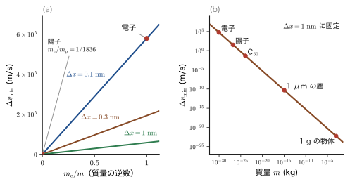
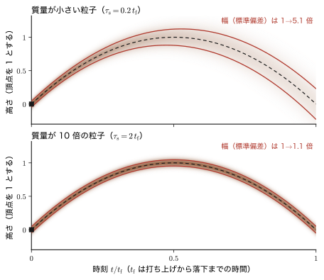
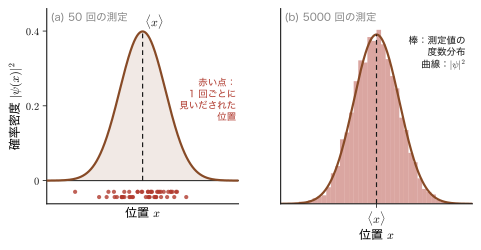
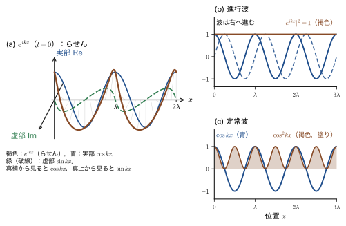
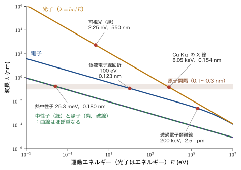
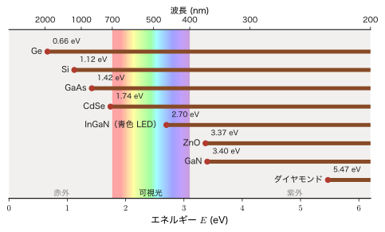
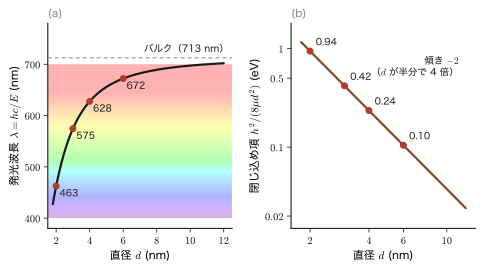
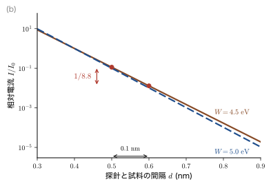

第1章量子力学はなぜ難しいのか — 古典物理の常識が通じない世界
「量子力学は難しい」——大学に入る前から，この言葉を聞いたことがあるかもしれない．たしかに難しい．けれども，その難しさは，複雑な数式がたくさん出てくることよりも，むしろ「これまでの経験から身につけた物理の常識が通用しない」ことから来ている．野球のボールを投げれば，いまボールがどこにあり，どれだけの速さで飛んでいるかを，同時にいくらでも正確に言える．通った道すじ（軌道）も 1 本に決まる．ところが，電子や原子の世界では，位置と運動量（質量×速度）を同時にいくらでも正確に決めることができない．軌道は 1 本の線ではなく確率の濃淡のようにぼやけ，物理量は多くの場合，平均値（期待値）でしか語れない．さらに，波を表す式まで，高校で習った $\cos(kx-\omega t)$ ではなく，複素数の $e^{i(kx-\omega t)}$ になる．
この章では，まず，古典物理（AD 03「大学基礎物理学」までの物理）の常識が破れる「四つの場所」を，実験事実や身近な数値，図，そして最小限の式で順に確かめる（1.1）．次に，「どこから量子力学を使わなければならないのか」を自分で判断できるように，ミクロの世界のものさし——長さ，エネルギー，作用（Planck（プランク）定数），de Broglie（ド・ブロイ）波長——を身につける（1.2）．そのうえで，量子力学が，物質の安定性，色，半導体，量子ドット，磁石，化学結合，電子顕微鏡，走査トンネル顕微鏡といった，材料工学で出会う身近な現象の根っこにあることを見渡す（1.3）．この章は，難しい式を解く章ではない．本書全体で学ぶ量子力学が「何のための，どんな学問なのか」をつかむための，地図の章である．この章は，本書全体のプロローグ（序章）にあたる．
本書は 11 の部からなり，物理学の歴史の順に進む．第I部（この章と次の章）で「なぜ難しいのか」「素朴な疑問」を確認したあと，第II部「量子論の黎明期」で，黒体放射・光電効果・Bohr（ボーア）の原子模型・Compton（コンプトン）散乱と物質波・電子のスリット実験という実験事実から，量子力学の公理へ進む．第III部で Schrödinger（シュレーディンガー）方程式を，井戸・トンネル効果・調和振動子・水素原子について解く．第IV部で軌道とスピンの角運動量，第V部・第VI部で近似法（摂動論と変分原理），第VII部で多電子系（Hartree（ハートリー）–Fock（フォック）近似・化学結合・結晶のバンド），第VIII部で遷移金属イオンの色を説明する配位子場理論，第IX部で時間依存の量子力学（光の吸収と放出，線形応答），第X部で第二量子化，第XI部で相対論的量子力学（Dirac（ディラック）方程式）を学ぶ．各部の位置づけと，姉妹編への橋わたしは，1.4 節の地図（図1.11）にまとめた．
- 古典物理の常識が量子論で変わる四つの場所（位置と運動量，軌道，物理量，波の式）を，数値と図で説明できること
- 不確定性を「測定器の精度の悪さ」ではなく，粒子が波の性質をもつことから来る原理的な性質として説明し，$\Delta v\ge\hbar/(2m\Delta x)$ で電子・原子・野球ボールの違いを数値で示せること
- eV，K，cm−1，THz，nm を換算でき，長さ・エネルギー・作用のものさしで，古典と量子の境目を判定できること
- 電子の de Broglie 波長 $\lambda=1.226\ \mathrm{nm}/\sqrt{E/\mathrm{eV}}$ と熱的 de Broglie 波長を計算できること
- 半導体の発光波長，量子ドットの色，走査トンネル顕微鏡（STM）の電流，電子顕微鏡の電子線の波長を，量子力学の観点から見積もれること
- 本書の 11 部の流れと，姉妹編（AD 05〜09）との関係を説明できること
もとにしたノート：望月泰英『物理学ノート 量子力学1』 pp. 3–4．
1.1 「量子力学は難しい」の正体 — 古典物理の常識が破れる四つの場所
量子力学は難しい，という固定観念がある．ならば，なぜ難しいのか？ 一言でいえば，「大きさが 1 m，重さが 1 kg 程度の日常のものごとから作り上げた直観が，電子や原子には通用しない」からである．古典物理学（Newton（ニュートン）力学・電磁気学・熱力学）は，日常のスケールの現象を見事に説明する．ところが，古典物理では当たり前だった次の四つの「常識」が，ミクロの世界では成り立たない．表1.1 にその四つの場所をまとめる．
| 古典物理の常識 | 量子論での姿 | 本書の節 |
|---|---|---|
| 物体の位置と運動量（＝質量×速度）は，同時にいくらでも正確に決められる | 位置と運動量は同時にはいくらでも正確には決まらない（不確定性原理） | 1.1.1 |
| 物体の軌道は 1 本に決まる | 軌道は確率密度のようにぼやける | 1.1.2 |
| 位置・運動量・エネルギーなどの物理量は，測れば決まった値になる | 物理量は確率分布で表され，期待値（平均値）でしか分からない．ただし，一意に決まる物理量もある | 1.1.3 |
| 波は実数の式 $\cos(kx-\omega t)$ で表される | 波動関数は複素数の $e^{i(kx-\omega t)}$ で表される．進行波は $e^{ikx}$，定常波は $\cos kx$（または $\sin kx$） | 1.1.4 |
以下，四つの場所を 1.1.1〜1.1.4 に順に取り上げる．それぞれ，実験事実または身近な数値 → 図 → 考え方 → 最小限の式 → 例題，の順に進む．ここで述べることは，証明つきの定理というより，「量子論の世界はこうなっている」という紹介である．厳密な議論は，不確定性原理は第8章，確率解釈は第7章と第8章，Schrödinger方程式は第9章で行う（第7章，第8章，第9章）．
1.1.1 位置と運動量が分からなくなる
古典物理の常識．時速 $144\ \mathrm{km}$（秒速 $40\ \mathrm{m/s}$）で飛ぶ，質量 $0.145\ \mathrm{kg}$ の野球ボールを考える．レーダーガンはボールの速さを測り，高速度カメラは位置を測る．どちらも，測定器をよくすれば好きなだけ細かく測れるし，速さと位置を同時に測ることにも何の困難もない．古典力学では，物体の質量が分かっていれば，速度 $v$ が分かることは運動量 $p=mv$ が分かることと同じである．そして，ある時刻の位置 $x$ と運動量 $p$ を与えれば，Newton の運動方程式によって，その後の運動がすべて決まる．古典力学の状態は，位置と運動量の組 $(x,p)$ という 1 点（位置と運動量を縦横の軸にとった平面，すなわち位相空間の 1 点．大学基礎物理学 第45章 45.5）で完全に指定され，位置も運動量も，同時に任意の精度で確定した値をもつ，と考えられてきた．（「速度が分かれば位置と運動量が決まる」という言い方は，「初期位置と初速が分かれば，以後の位置と運動量が決まる」と正確に言い直しておくのがよい．位置は，初期位置から出発して運動方程式で決まっていくからである．）
量子論での姿．量子論では，この常識が成り立たない．粒子の運動量（速度に質量を掛けたもの）が正確に分かっている状態では，粒子の位置が分からなくなる．逆に，粒子の位置が正確に分かっている状態では，運動量が分からなくなる（図1.1）．ここでいう「分からない」は，測定器の腕が悪いという意味ではなく，粒子がそもそも位置と運動量の両方に確定した値をもたない，という意味である．これを，位置のばらつきと運動量のばらつきの間の関係として述べたものが，Heisenberg（ハイゼンベルク）の不確定性原理（uncertainty principle）である．ここで「ばらつき」とは，同じ状態を何度も用意して位置（または運動量）を測ったとき，測定値がどれほど散らばるかの大きさ（標準偏差）のことで，位置について $\Delta x$，運動量について $\Delta p$ と書く．
法則1.1 不確定性原理（結果の紹介）
粒子の位置のばらつき $\Delta x$ と運動量のばらつき $\Delta p$ の積は，$\hbar/2$ より小さくできない：
\begin{equation} \Delta x\,\Delta p\ge\frac{\hbar}{2} \label{eq:1-uncert} \end{equation}ここで $\hbar$（エイチバー）$=h/2\pi=1.0546\times10^{-34}\ \mathrm{J\,s}$ は，Planck定数 $h=6.626\times10^{-34}\ \mathrm{J\,s}$ を $2\pi$ で割ったものである．（この不等式の証明は第8章で行う．この章では結果だけを使う．）
式 \eqref{eq:1-uncert} の意味を言葉でいえば，「位置を狭い範囲に決めようとすると運動量の散らばりが大きくなり，運動量を精密に決めようとすると位置の散らばりが大きくなる．両方を同時に小さくすることはできず，2 つの散らばりの積は $\hbar/2$ 以下にはならない」ということである．右辺の $\hbar/2$ が $10^{-35}\ \mathrm{J\,s}$ という極端に小さな数であることが，日常の世界で不確定性が目に見えない理由である（1.2.3 節）．
なぜ $x$ と $p$ が同時に分からないか — 波としての粒子
不確定性は，粒子が波としての性質をもつことから来ている．実験事実として，電子線を結晶に当てると，X 線と同じように回折する（Davisson（デイヴィソン）と Germer（ガーマー）の実験，1927 年．第6章）．電子のような粒子が波として振る舞うとき，その波長 $\lambda$ は運動量 $p$ によって決まる（次に述べる de Broglie の関係）．運動量が正確に決まった粒子は，波長がただ 1 つに決まった正弦波で表される．正弦波は空間のどこまでも同じ形で続くので，粒子が「どこにいるか」は決まらない．
逆に，粒子を狭い範囲に見いだしたいなら，波を狭い範囲だけにふくらみをもつ「波束」にしなければならない．狭い範囲だけに局在した波は，波長の異なる多くの正弦波を重ね合わせないと作れない．波束の幅 $\Delta x$ と，それを作るのに必要な波数（$k=2\pi/\lambda$）の広がり $\Delta k$ との間に $\Delta x\,\Delta k\gtrsim1$（$\gtrsim$ は「ほぼ以上」を表す記号）が成り立つことは，大学基礎物理学 第17章 17.6 で学んだ．波長が多くの値にわたるということは，運動量が 1 つの値に決まらないということである．運動量と波数は $p=\hbar k$ で結ばれる（$p=h/\lambda=\hbar k$）ので，$\Delta p=\hbar\,\Delta k$ となり，$\Delta x\,\Delta k\gtrsim1$ は $\Delta x\,\Delta p\gtrsim\hbar$ とほぼ同じ意味になる．標準偏差で正確に定義すると，下限が $\hbar/2$ になる．
身近な例に，音がある．「ポーン」と長く伸ばした音は 1 つの音程（周波数）がはっきり決まるが，手をたたいたときの「パチッ」という短い音は特定の音程をもたず，多くの周波数の音を含んでいる．音の続く長さと周波数のあいまいさの間にも，同じ関係がある．不確定性は，波に共通の性質なのであって，量子力学だけの奇妙な「決まり」ではなく，粒子が波であることの当然の帰結である．
ここで使った「運動量 $p$ の粒子は波長 $\lambda=h/p$ の波として振る舞う」という関係を，法則としてまとめておく．これは光子について知られていた関係 $p=h/\lambda$ を，電子などの粒子にまで広げたものである．
法則1.2 de Broglie の関係（結果の紹介）
運動量 $p$ の粒子は，波長 $\lambda$ の波としての性質をもち，両者は次の関係で結ばれる（de Broglie，1924 年）：
\begin{equation} \lambda=\frac{h}{p}=\frac{h}{mv}\qquad\Bigl(\text{波数 }k=\frac{2\pi}{\lambda}\text{ を使うと }p=\hbar k\Bigr) \label{eq:1-debroglie} \end{equation}（この関係は第II部で，光の運動量から出発して導く（第6章）．）
例題1.1 野球ボールと電子の de Broglie 波長
(1) 質量 $0.145\ \mathrm{kg}$ の野球ボールが $40\ \mathrm{m/s}$ で飛んでいる．de Broglie 波長を求めよ．(2) 運動エネルギーが $1\ \mathrm{eV}$ の電子と $100\ \mathrm{eV}$ の電子の de Broglie 波長を求めよ（エネルギーの単位 eV は 1.2.2 節で説明する．$1\ \mathrm{eV}=1.602\times10^{-19}\ \mathrm{J}$）．(3) 結晶の原子間隔を $0.25\ \mathrm{nm}$ として，波としての性質が見えやすいのはどの場合か．
解答 (1) 運動量は $p=mv=0.145\times40=5.80\ \mathrm{kg\,m/s}$．式 \eqref{eq:1-debroglie} より $$ \lambda=\frac{h}{p}=\frac{6.626\times10^{-34}\ \mathrm{J\,s}}{5.80\ \mathrm{kg\,m/s}}=1.14\times10^{-34}\ \mathrm{m} $$ である（$\mathrm{J\,s}=\mathrm{kg\,m^2/s}$ なので，割り算の結果の単位は $\mathrm{m}$ になる）．これは，原子核の大きさ（$10^{-15}\ \mathrm{m}$ 程度）よりもさらに $10^{19}$ 倍も小さい．
(2) 電子の質量は $m_{\mathrm e}=9.109\times10^{-31}\ \mathrm{kg}$ である．運動エネルギーが $E$ なら $E=p^2/2m_{\mathrm e}$ なので $p=\sqrt{2m_{\mathrm e}E}$ である．$E=1\ \mathrm{eV}=1.602\times10^{-19}\ \mathrm{J}$ のとき， $$ p=\sqrt{2\times9.109\times10^{-31}\times1.602\times10^{-19}}\ \mathrm{kg\,m/s}=\sqrt{2.919\times10^{-49}}\ \mathrm{kg\,m/s}=5.402\times10^{-25}\ \mathrm{kg\,m/s} $$ $$ \lambda=\frac{6.626\times10^{-34}}{5.402\times10^{-25}}\ \mathrm{m}=1.226\times10^{-9}\ \mathrm{m}=1.226\ \mathrm{nm} $$ このときの速さは $v=p/m_{\mathrm e}=5.93\times10^{5}\ \mathrm{m/s}$ である．$E=100\ \mathrm{eV}$ では，$E$ が 100 倍なので $p$ は 10 倍，$\lambda$ は $1/10$ になり，$\lambda=0.1226\ \mathrm{nm}$（$v=5.93\times10^{6}\ \mathrm{m/s}$．光速の約 2 % なので非相対論的な式でよい）．
(3) 波が結晶の原子列で回折して強めあう条件（Bragg（ブラッグ）の条件）は，波長が面間隔の 2 倍以下のときにだけ満たされる．波長が原子間隔（$0.25\ \mathrm{nm}$）と同程度か，それより短いときに，回折という波としての性質がはっきり観測される．$1\ \mathrm{eV}$ の電子は $\lambda=1.226\ \mathrm{nm}$ で原子間隔の約 5 倍もあり，結晶で回折像を作らない．$100\ \mathrm{eV}$ の電子は $\lambda=0.1226\ \mathrm{nm}$ で原子間隔より短く，結晶で回折する（Davisson–Germer の実験で使われたのは約 $54\ \mathrm{eV}$ の電子線で，$\lambda=0.167\ \mathrm{nm}$）．一方，野球ボールの $\lambda=10^{-34}\ \mathrm{m}$ は，どんな物体の大きさ・間隔よりもはるかに小さいので，波としての性質は，永久に観測されない（電子の回折の実験の詳しい解析は第6章 6.5）．
次に，不確定性が粒子の質量にどう依存するかを見よう．運動量は $p=mv$ なので，運動量のばらつき $\Delta p$ は速さのばらつき $\Delta v$ と $\Delta p=m\,\Delta v$ の関係にある．これを式 \eqref{eq:1-uncert} に入れて $m$ で割ると，
\begin{equation} \Delta v\ \ge\ \frac{\hbar}{2m\,\Delta x} \label{eq:1-dv} \end{equation}となる．位置を $\Delta x$ の範囲に決めたとき，速さのばらつきは少なくとも $\hbar/(2m\Delta x)$ になる．この下限は質量 $m$ の逆数に比例する．つまり，粒子が軽いほど，速さの不確定性は大きい．図1.2 (a) は，位置のばらつきを $\Delta x=0.1,\ 0.3,\ 1\ \mathrm{nm}$ に固定したときの $\Delta v$ の下限を，質量の逆数 $m^{-1}$（電子の質量 $m_{\mathrm e}$ を単位にとった $m_{\mathrm e}/m$）に対して描いたものである．どれも原点を通る直線で，質量が小さい（$m^{-1}$ が大きい）ほど不確定性が大きい．電子（$m_{\mathrm e}/m=1$）では大きな値になるが，陽子（$m_{\mathrm e}/m_{\mathrm p}=1/1836$）ではほとんど原点に張りついてしまう（ここで描いたのは，不確定性原理が許す下限だけを見た関係である．実際の状態での速さのばらつきは，状態によってはこれより大きくなる）．(b) は同じ関係を質量の対数軸に描いたもので，電子から $1\ \mathrm{g}$ の物体まで，質量が約 27 桁も変わる（質量比は $1\ \mathrm{g}/m_{\mathrm e}=1.1\times10^{27}$）と，$\Delta v$ の下限も 27 桁変わることが分かる．

例題1.2 電子を原子の大きさの範囲に閉じ込める
電子（質量 $m_{\mathrm e}=9.109\times10^{-31}\ \mathrm{kg}$）を，位置のばらつき $\Delta x=0.1\ \mathrm{nm}$（原子の大きさ）と $\Delta x=1\ \mathrm{nm}$ の範囲に閉じ込めたとき，速さのばらつきの下限 $\Delta v_{\min}$ を求めよ．また，水素原子の中の電子の典型的な速さ $2.19\times10^{6}\ \mathrm{m/s}$（1.2.4 節）と比べて，「電子の軌道を描く」という描像が成り立つかどうかを考えよ．
解答 式 \eqref{eq:1-dv} の等号の場合を計算する．$\Delta x=0.1\ \mathrm{nm}=1\times10^{-10}\ \mathrm{m}$ のとき， $$ \Delta v_{\min}=\frac{\hbar}{2m_{\mathrm e}\Delta x}=\frac{1.0546\times10^{-34}\ \mathrm{J\,s}}{2\times9.109\times10^{-31}\ \mathrm{kg}\times1\times10^{-10}\ \mathrm{m}}=5.79\times10^{5}\ \mathrm{m/s} $$ （$\mathrm{J\,s/(kg\,m)}=\mathrm{kg\,m^2\,s^{-1}/(kg\,m)}=\mathrm{m/s}$）．$\Delta x=1\ \mathrm{nm}$ では $\Delta x$ が 10 倍なので，$\Delta v_{\min}=5.79\times10^{4}\ \mathrm{m/s}$．
水素原子の電子の速さ $2.19\times10^{6}\ \mathrm{m/s}$ と比べると，$\Delta x=0.1\ \mathrm{nm}$ に閉じ込めたときの速さのばらつき $5.79\times10^{5}\ \mathrm{m/s}$ は，その約 26 %（約 4 分の 1）にもなる．原子の中の電子は，速さそのものが大きな不確定性を伴っているので，「いまここをこの速さで通り，次の瞬間にはあそこにいる」という軌道の描像は成り立たない．これに対して，野球ボール（$0.145\ \mathrm{kg}$）では，$\Delta x=1\ \mathrm{mm}$ に決めても $\Delta v_{\min}=\dfrac{1.0546\times10^{-34}\ \mathrm{J\,s}}{2\times0.145\ \mathrm{kg}\times10^{-3}\ \mathrm{m}}=3.6\times10^{-31}\ \mathrm{m/s}$ と極めて小さく（質量 $1.0\ \mathrm{g}$ の物体の場合は例1.1），軌道の描像で何の問題もない．
問い：今までの $x$ と $p$ とは何だったのか
位置 $x$ と運動量 $p$ が同時には決まらないというなら，力学でずっと使ってきた $x$ と $p$ は，いったい何だったのだろうか．答えは 2 つある．
第 1 に，古典力学は，量子力学の「よい近似」である．野球ボールの位置を $1\ \mathrm{mm}$，速さを $0.01\ \mathrm{m/s}$ の精度で決めたとする．このとき $\Delta x\,\Delta p=1\ \mathrm{mm}\times(0.145\ \mathrm{kg}\times0.01\ \mathrm{m/s})=1.45\times10^{-6}\ \mathrm{J\,s}$ で，不確定性原理が要求する下限 $\hbar/2=5.27\times10^{-35}\ \mathrm{J\,s}$ の約 $2.7\times10^{28}$ 倍である．下限にはるかに届かないので，位置と運動量が同時に確定しているように扱っても，何の矛盾も起きない．
第 2 に，量子力学でも位置や運動量が「なくなる」わけではない．位置を測れば，そのつど 1 つの値が得られる．ただし，同じ状態を用意して測るたびに値がばらつく（1.1.3 節）．古典力学の $x$ と $p$ は，量子力学ではそのばらつきの中心にあたる平均的な値（期待値）と見なせる．
このため，マクロの世界（日常の大きさの世界）に住む私たちには，ミクロの世界に住む粒子の様子は，感覚的に理解できるものではない．私たちの感覚は，$\hbar$ が無視できるほど大きな作用（1.2.3 節）を扱う世界で磨かれてきた．$\hbar$ が無視できない世界の振る舞いを，日常の直観で想像しようとすると，たいていうまくいかない．これは私たちの理解力の問題ではなく，経験の届く範囲の問題である．だから，量子力学の学習では，感覚に頼るのではなく，数値の大きさ（1.2 節）と論理（数式）を頼りに，新しい直観を一から作り上げていく．
1.1.2 軌道が一意に決まらない
古典物理の常識．斜めに投げたボールは放物線を描き，惑星は楕円を描いて太陽のまわりを回る．軌道とは，時刻 $t$ ごとの位置 $x(t)$ を並べたものである．古典力学では，Newton の運動方程式が時間について 2 階の微分方程式なので，ある時刻の位置と速度（初期条件）を与えれば，その後の軌道はただ 1 通りに決まる（大学基礎物理学 第2章 2.2，放物運動の軌道は第5章 5.1）．これはあまりにも当たり前の前提なので，私たちはこのことを不思議に思わない．
量子論での姿．量子論では，軌道が一意に決まらない．同じ条件で電子を 1 個ずつ打ち出して到達位置を調べると，1 回ごとに別の位置に着く．多数回くり返すと，到達位置の分布は，古典的な軌道のまわりに「帯」のように広がる．この帯の濃さは，粒子がその場所に見いだされる確率の大きさを表す（図1.3）．量子論では，軌道は 1 本の線ではなく，確率密度のようなものになる．（電子を 1 個ずつ二重スリットに向けて打ち込むと，1 個ずつは点として検出されるが，多数個の点が集まると干渉縞ができる．外村彰（とのむら あきら）らの実験（1989 年）．第7章．）なお，確率密度の意味は 1.1.3 節で説明する．いまは，「濃いところほど電子が見いだされやすい」と読めばよい．
この帯の広がり方は，量子力学で正確に計算できる．一様な力（たとえば重力）だけがはたらく場合には，波束の中心は古典力学の軌道（放物線）にちょうど沿って動き（Ehrenfest（エーレンフェスト）の定理．第9章），帯の幅は，力がはたらかない場合の広がり方と同じになる．最初の位置のばらつき（標準偏差）が $\Delta x_0$ である Gauss（ガウス）型の波束が，時間 $t$ の後にもつ位置のばらつきは，
\begin{equation} \Delta x(t)=\Delta x_0\sqrt{1+\left(\frac{\hbar t}{2m\,\Delta x_0^{2}}\right)^{2}} \label{eq:1-spread} \end{equation}である（導出は第9章以降．ここでは結果を使う）．波束の形を $\psi\propto e^{-x^2/2\sigma^2}$ と書いたときは $\Delta x_0=\sigma/\sqrt2$ の関係がある．式 \eqref{eq:1-spread} の意味を確かめておこう．$\tau_{\mathrm s}=2m\,\Delta x_0^{2}/\hbar$ とおくと，$\Delta x(t)=\Delta x_0\sqrt{1+(t/\tau_{\mathrm s})^2}$ である．$t\ll\tau_{\mathrm s}$ のあいだは幅はほとんど $\Delta x_0$ のままで，$t\gg\tau_{\mathrm s}$ では $\Delta x(t)\approx\Delta x_0\,t/\tau_{\mathrm s}=\hbar t/(2m\Delta x_0)$ のように時間に比例して広がる．これは，最初の速さのばらつき $\Delta v=\hbar/(2m\Delta x_0)$（式 \eqref{eq:1-dv} の等号）に時間 $t$ を掛けたもの，つまり「速さのばらつきのせいで，時間とともに位置の広がりが増えていく」という描像そのものである．$\tau_{\mathrm s}$（広がりの時間）は質量 $m$ に比例するので，質量が大きいほど広がりが遅く，帯は細いままで，古典的な軌道に見える．図1.3 で質量が 10 倍の粒子は，同じ時間の間に帯がほとんど広がらない．

問い：今まで何で軌道は一意に決まっていたのだ
古典論（Newton 力学）では，運動の軌道が一意に決まることが当たり前であった．それなのに，量子論では，軌道が確率密度のようになる．なぜ，これまで軌道は一意に決まっていたのだろうか．答えは，日常の物体では広がりの時間 $\tau_{\mathrm s}$ が，実験のどんな時間よりも桁違いに長いからである．次の例題1.3 で，その桁数を確かめる．
例題1.3 波束が広がるまでの時間 — 電子と巨視的な物体
初めの位置のばらつき $\Delta x_0$ の波束の幅が，自由な運動で 2 倍（$\Delta x(t)=2\Delta x_0$）になるまでの時間 $t_2$ を求める式を作り，(a) 電子（$\Delta x_0=0.1\ \mathrm{nm}$），(b) 電子（$\Delta x_0=1\ \mathrm{\mu m}$），(c) 質量 $1\ \mathrm{g}$ の物体（$\Delta x_0=1\ \mathrm{\mu m}$），(d) 野球ボール（$0.145\ \mathrm{kg}$，$\Delta x_0=1\ \mathrm{mm}$）について数値を計算せよ．
解答 式 \eqref{eq:1-spread} で $\Delta x(t)=2\Delta x_0$ とおくと，$\sqrt{1+(t_2/\tau_{\mathrm s})^2}=2$ より $1+(t_2/\tau_{\mathrm s})^2=4$，すなわち $t_2=\sqrt3\,\tau_{\mathrm s}$ である．$\tau_{\mathrm s}=2m\Delta x_0^2/\hbar$ を入れて， $$ t_2=\frac{2\sqrt3\,m\,\Delta x_0^{2}}{\hbar} $$ を得る．$2\sqrt3=3.464$，$\hbar=1.0546\times10^{-34}\ \mathrm{J\,s}$ を使う．
(a) $m=9.109\times10^{-31}\ \mathrm{kg}$，$\Delta x_0=1\times10^{-10}\ \mathrm{m}$ のとき，$t_2=3.464\times9.109\times10^{-31}\times10^{-20}/(1.0546\times10^{-34})=2.99\times10^{-16}\ \mathrm{s}$ で，約 $3\times10^{-16}\ \mathrm{s}$（$0.3$ フェムト秒．原子内の電子の運動の時間スケール $2\pi a_0/(\alpha c)=1.5\times10^{-16}\ \mathrm{s}$（例題1.6）の約 2 倍）．原子の中に閉じ込められた電子は，原子内の運動の時間スケールとほぼ同じ時間で，位置の広がりが 2 倍になる．
(b) $\Delta x_0=10^{-6}\ \mathrm{m}$ では，(a) の $(10^{-6}/10^{-10})^2=10^{8}$ 倍で，$t_2=3.0\times10^{-8}\ \mathrm{s}$（$30$ ナノ秒）．
(c) $m=1\times10^{-3}\ \mathrm{kg}$，$\Delta x_0=10^{-6}\ \mathrm{m}$ のとき，$t_2=3.464\times10^{-3}\times10^{-12}/(1.0546\times10^{-34})=3.3\times10^{19}\ \mathrm{s}$．1 年は約 $3.16\times10^{7}\ \mathrm{s}$ なので，これは約 $1.0\times10^{12}$ 年，すなわち宇宙の年齢（約 $1.4\times10^{10}$ 年）の約 75 倍である．
(d) $m=0.145\ \mathrm{kg}$，$\Delta x_0=10^{-3}\ \mathrm{m}$ のとき，$t_2=3.464\times0.145\times10^{-6}/(1.0546\times10^{-34})=4.8\times10^{27}\ \mathrm{s}$（約 $1.5\times10^{20}$ 年）．
電子は，原子の大きさに閉じ込められていれば $10^{-16}\ \mathrm{s}$ 程度でぼやけるのに対し，質量 $1\ \mathrm{g}$ の物体は宇宙の年齢よりも長い間ぼやけない．質量が 10 の何乗も大きいと，波束の広がりは実験の時間内には決して見えない．こうして「軌道は一意に決まる」という古典的な直観が，巨視的な物体については，きわめてよい近似になるのである．
問い：軌道とは何か
古典論（Newton 力学）では，運動の軌道が一意に決まることが当たり前だった．量子論では，軌道が確率密度のようになる．なぜだろうか．そして，そもそも軌道とは何だろうか．
古典力学で「軌道が決まる」とは，各時刻に粒子の位置が 1 つの値をもつ，ということであった．量子力学では，各時刻に決まっているのは，位置ではなく波動関数（wave function）$\Psi(x,t)$ である．波動関数は，Schrödinger 方程式（第9章）によって，最初の波動関数から一意に決まる．そして，その絶対値の 2 乗 $|\Psi(x,t)|^2$ が，時刻 $t$ に位置 $x$ の付近に粒子を見いだす確率密度を与える．つまり，量子力学は「決定論をやめた」のではなく，「時間とともに決定論的に変化していく量」を，位置 $x(t)$ から波動関数 $\Psi(x,t)$ に取り替えたのである．一意に決まらなくなるのは，位置を実際に測って 1 つの値を得るときの結果のほうである．
ここから，量子論の重要な言葉づかいも出てくる．化学で「1s 軌道」「2p 軌道」というときの「軌道」は，古典力学の軌道（英語では orbit）ではなく，電子の空間的な広がりを表す波動関数（orbital）のことである（第15章，第16章）．水素原子の電子は，原子核のまわりを回る点ではなく，核を中心とする「電子の雲」のように広がっている．
1.1.3 物理量が期待値になる
古典物理の常識．古典論では，物体の軌道が一意に決まるので，ある時刻の位置も運動量もエネルギーも，1 つの正確な値に決まっている．測定は，その値を読み取る操作にすぎない．
量子論での姿．量子論では，粒子の軌道が一意に決まらないため，位置・運動量・エネルギーなどの物理量は確率分布で表され，期待値でしか分からない（図1.4）．たとえば，まったく同じ状態にある電子を，同じ条件で 1 個ずつ用意して，位置を測ることを何度もくり返す．測定のたびに，電子は別の場所に見いだされる．測定値の分布は，1 回や 2 回の測定ではただの点の集まりにしか見えないが，測定を重ねるにつれて，ある決まった形の分布に近づいていく．この分布の形を決めているのが，波動関数 $\psi(x)$ である．
法則1.3 Born の確率解釈（言葉での紹介）
状態が波動関数 $\psi(x)$ で表されるとき，$|\psi(x)|^2$ は，位置 $x$ の近くに粒子を見いだす確率密度である．すなわち，位置が $x$ から $x+\mathrm{d}x$ の間に見いだされる確率は $|\psi(x)|^2\,\mathrm{d}x$ である（Born（ボルン），1926 年．確率密度の考え方は大学数学 第14章 14.2）．

波動関数そのものは複素数の値をとり，直接に測ることはできない．測ることができるのは，確率の大きさ $|\psi|^2$ である．測定値が毎回ばらつくとき，測定の結果を 1 つの数で代表させるのが期待値（expectation value）である．
定義1.1 期待値（平均値）
同じ状態を用意して物理量 $A$ の測定を $N$ 回くり返し，値 $A_j$ が $n_j$ 回得られたとする．測定回数を限りなく増やしたときの平均
\begin{equation} \langle A\rangle=\lim_{N\to\infty}\sum_j A_j\,\frac{n_j}{N}=\sum_j A_j\,P_j \label{eq:1-expect} \end{equation}を，$A$ の期待値という．$P_j$ は値 $A_j$ が得られる確率である．位置のように連続的な値をとる量では，和は積分になり，$\langle x\rangle=\displaystyle\int x\,|\psi(x)|^2\,\mathrm{d}x$ となる．
期待値の考え方は，AD 02 の確率の章（第14章 14.1：離散的な確率変数，14.4：連続的な確率変数）と同じである．サイコロの目の期待値は $(1+2+3+4+5+6)/6=3.5$ であるが，$3.5$ の目が出ることはない．期待値は「1 回の測定で得られる値」ではなく，「多数回の測定の平均」である．図1.4 の $\langle x\rangle$ も同様である．この図のように左右対称な分布では，$\langle x\rangle$ は最も濃い位置と一致するが，一般には，期待値は最も見いだされやすい位置とは限らない（サイコロの $3.5$ のように，期待値そのものは一度も測定されないこともある）．運動量やエネルギーの期待値も，波動関数から同じように計算できる（第8章）．関連シミュレーター：確率の期待値 — サイコロの目から $|\psi|^2$ まで．
例1.1 質量 $1.0\ \mathrm{g}$ の物体の速さの不確定性 — 本当に「正確」なのか
古典論では，物体の位置と運動量は正確に決まると述べた．これは本当に正確なのか．質量 $1.0\ \mathrm{g}$ の物体で確かめてみよう．
位置を $\Delta x=1\ \mathrm{\mu m}$（髪の毛の太さの約 100 分の 1 で，光学顕微鏡でようやく決められる精度）まで決めたとする．式 \eqref{eq:1-dv} の下限は， $$ \Delta v_{\min}=\frac{\hbar}{2m\,\Delta x}=\frac{1.0546\times10^{-34}\ \mathrm{J\,s}}{2\times1.0\times10^{-3}\ \mathrm{kg}\times1\times10^{-6}\ \mathrm{m}}=5.3\times10^{-26}\ \mathrm{m/s} $$ である．位置を $\Delta x=1\ \mathrm{mm}$ までしか決めないなら，$\Delta x$ が 1000 倍になるので $5.3\times10^{-29}\ \mathrm{m/s}$ となる．どちらも，どんな測定器でも見えないほど小さい．かりに速さを $10^{-6}\ \mathrm{m/s}$ の精度で測れたとしても（これはきわめて精密な測定である），量子力学が課す下限は，その約 $2\times10^{19}$ 分の 1 でしかない．質量 $1.0\ \mathrm{g}$ の物体の速さの不確定性は，実際上は存在しないに等しく，古典論の「正確に決まる」は，測定の精度の範囲では，正確なのである．
考察：一意に決まる物理量もある
ただし，一意に決まる物理量はある．物理量が確率分布で表されるといっても，どんな状態でも測定値がばらつくわけではない．状態によっては，ある物理量の測定値が，測るたびに毎回同じ値になる．このような状態を，その物理量の固有状態（eigenstate），そのとき得られる値を固有値（eigenvalue）という（第9章）．たとえば次のものが一意に決まる．
- 水素原子が基底状態にあるときのエネルギー $-13.6\ \mathrm{eV}$，箱の中の粒子の $n$ 番目の状態のエネルギー $E_n=n^2h^2/(8mL^2)$ のように，定常状態のエネルギー（第10章，第15章）．エネルギーが確定した状態で測れば，何度測っても同じ値になる．
- 電子の質量 $9.109\times10^{-31}\ \mathrm{kg}$，電子の電荷（電気素量 $e_0$ を使って $-e_0$ と書く．$e_0$ は 1.2.2 節で説明する），電子スピンの大きさ（第23章）は，電子であればいつでも同じ値である．
- 運動量が確定した状態（1.1.4 節の $e^{ikx}$）での運動量 $\hbar k$，角運動量の大きさやその $z$ 成分，電子スピンの $z$ 成分 $\pm\hbar/2$ のように，固有状態での値（第21章，第23章）．
一意に決まるか，ばらつくかは，物理量ごと，状態ごとに決まる．位置が確定した状態（位置の固有状態）では運動量がばらつき，運動量が確定した状態（運動量の固有状態）では位置がばらつく（1.1.1 節）．同様に，エネルギーが確定した定常状態でも，位置は一般にばらつく．水素原子の基底状態では，エネルギーは $-13.6\ \mathrm{eV}$ と一意に決まるが，電子の位置は核のまわりの雲のように広がった分布をもつ．
なお，粒子がどこかに必ず見いだされるという事実（全確率が 1 であること）は，物理量の値ではなく，波動関数が常に満たすべき条件である．波動関数の大きさを，全確率が 1 になるように決めることを規格化（normalization）という（第8章 8.1）．
1.1.4 波の式が $e^{i(kx-\omega t)}$ になる
古典物理の常識．水面の波，音，弦を伝わる波といった古典的な波では，場所 $x$・時刻 $t$ における実数の量（水面の高さ，空気の圧力，弦の変位）が，$\cos(kx-\omega t)$ のような三角関数で表される（大学基礎物理学 第11章 11.3）．$k=2\pi/\lambda$ は波数，$\omega=2\pi/T$ は角振動数（$T$ は周期）で，この波は $x$ の正の向きに速さ $\omega/k$ で進む（同 11.4）．両端を固定した弦のように，同じ場所で振動するだけで進まない波は定常波（standing wave）とよばれ，$\cos kx\cdot\cos\omega t$ のように，位置と時間の関数の積で表される（同 11.7）．
量子論での姿．量子論の波動関数は複素数の値をとり，自由に運動する粒子の進行波は，Euler の公式（大学数学 第21章 21.4）を使って，
\begin{equation} \Psi(x,t)=e^{i(kx-\omega t)}=\cos(kx-\omega t)+i\sin(kx-\omega t) \label{eq:1-plane} \end{equation}と表される（$i$ は虚数単位）．時間の因子を省いて空間の部分だけを見れば，量子論での進行波は $e^{ikx}$ で表され，定常波は $\cos kx$（もしくは $\sin kx$）で表される．これを図にしたものが図1.5 である．複素数 $e^{ikx}$ は，$x$ が増えるにつれて複素平面の単位円上を一定の割合で回る．横軸に位置 $x$，縦と奥行きに実部・虚部をとると，$e^{ikx}$ はらせんになる．実部（$\cos kx$）と虚部（$\sin kx$）は，位相が $1/4$ 波長ずれた 2 つの波である．

複素数の波の中身を，物理の言葉で読み取っておこう．
- 進行波 $e^{ikx}$．運動量 $p=\hbar k$（$x$ の正の向き）が確定した状態を表す（式 \eqref{eq:1-debroglie} の $p=\hbar k$）．$|e^{ikx}|^2=\cos^2kx+\sin^2kx=1$ なので，位置の確率密度は $x$ によらず一定で，粒子の位置は完全に不明である．これは，1.1.1 節の「運動量が確定すると位置が分からなくなる」を式で見たものにほかならない．らせんの巻く向きが運動量の向きを表す（$e^{-ikx}$ は逆向きに巻き，運動量は $-\hbar k$）．なお，$e^{ikx}$ は空間全体にどこまでも広がる理想化された波で，厳密には全確率を 1 にそろえる（規格化する）ことができない．この点の厳密な扱いは，第8章 8.1.5 で述べる（連続規格化）．
- 定常波 $\cos kx$．Euler の公式より $\cos kx=\dfrac{e^{ikx}+e^{-ikx}}{2}$ なので，運動量 $+\hbar k$ の波と $-\hbar k$ の波の等しい重ね合わせである（壁で反射して往復する粒子の波）．位置の確率密度 $\cos^2kx$ は，$x=\lambda/4$，$3\lambda/4,\dots$ に節（確率が $0$ の場所）をもつ．運動量の平均は $\langle p\rangle=0$ だが，運動量の大きさは $|p|=\hbar k$ に確定している．「平均が $0$」と「止まっている」は同じではない．
- 時間の因子．この教科書では，時間を含む進行波を $e^{i(kx-\omega t)}$ と書き，$\omega=E/\hbar$ である（$E$ は粒子のエネルギー）．時間の因子が $e^{-i\omega t}$ であること（$e^{+i\omega t}$ でないこと）は，この教科書全体の約束である．
なぜ波動関数は複素数でなければならないのか
実数の波 $\cos(kx-\omega t)$ ではだめな理由を，一つだけ挙げておく．力を受けない自由な粒子の波動関数がしたがう Schrödinger 方程式（第9章）は，$i\hbar\,\dfrac{\partial\Psi}{\partial t}=-\dfrac{\hbar^2}{2m}\dfrac{\partial^2\Psi}{\partial x^2}$ という形をしていて，時間についての 1 階の微分に $i$ が付いている．式 \eqref{eq:1-plane} の $\Psi=e^{i(kx-\omega t)}$ を代入すると，左辺は $\hbar\omega\,\Psi$，右辺は $\dfrac{\hbar^2k^2}{2m}\Psi$ となり，$\hbar\omega=\dfrac{\hbar^2k^2}{2m}$，すなわち $E=\dfrac{p^2}{2m}$（エネルギー＝運動エネルギー）の関係がきちんと出てくる．ところが実数の波 $\cos(kx-\omega t)$ を代入すると，左辺は $i\hbar\omega\sin(kx-\omega t)$ という虚数の式，右辺は実数の式になり，等しくなりようがない．$i$ を含む方程式の解は，複素数でなければならないのである．
一方，複素数の波動関数は直接測定できない．測定できるのは，位置の確率密度 $|\Psi|^2$ のような実数の量だけである．波動関数の位相（らせんの巻き方）は，測定される量を間接的に決める，目に見えない量であり，そこに運動量の情報が入っている．
例題1.4 $e^{ikx}$ と $\cos kx$ — 運動量が確定した波と，運動量が $\pm$ の波
波長 $\lambda=0.5\ \mathrm{nm}$ の電子の波を考える．(1) 電子の運動量 $p$ と運動エネルギー $E$ を求めよ．(2) 波動関数が $e^{ikx}$ のとき，位置の確率密度と運動量の測定値を述べよ．(3) 波動関数が $\cos kx$ のとき，位置の確率密度，運動量の測定値とその確率，運動量の期待値 $\langle p\rangle$ を述べよ．また，節の間隔を求めよ．
解答 (1) 式 \eqref{eq:1-debroglie} より $p=h/\lambda=6.626\times10^{-34}\ \mathrm{J\,s}/(0.5\times10^{-9}\ \mathrm{m})=1.325\times10^{-24}\ \mathrm{kg\,m/s}$．運動エネルギーは $$ E=\frac{p^2}{2m_{\mathrm e}}=\frac{(1.325\times10^{-24})^2}{2\times9.109\times10^{-31}}\ \mathrm{J}=9.64\times10^{-19}\ \mathrm{J}=6.02\ \mathrm{eV} $$ （$1\ \mathrm{eV}=1.602\times10^{-19}\ \mathrm{J}$ で割った）．速さは $v=p/m_{\mathrm e}=1.46\times10^{6}\ \mathrm{m/s}$，波数は $k=2\pi/\lambda=12.6\ \mathrm{nm^{-1}}$ である．なお，1.2.5 節の式 $E=1.504\ \mathrm{eV\,nm^2}/\lambda^2$ に $\lambda=0.5\ \mathrm{nm}$ を入れても $1.504/0.25=6.02\ \mathrm{eV}$ となり一致する．
(2) $|e^{ikx}|^2=1$ なので，位置の確率密度はどこでも同じで，電子の位置は完全に不明である．一方，運動量は $p=\hbar k=h/\lambda=1.325\times10^{-24}\ \mathrm{kg\,m/s}$（$x$ の正の向き）に確定している（測定値は毎回この値）．
(3) $\cos kx=\dfrac12e^{ikx}+\dfrac12e^{-ikx}$ なので，運動量 $+\hbar k$ の波と $-\hbar k$ の波が同じ大きさで重なっている．2 つの成分の係数の絶対値の 2 乗が等しく，測定すると運動量は $+\hbar k$ と $-\hbar k$ のどちらかの値が，それぞれ確率 $1/2$ で得られる（重ね合わせの係数と確率の関係は第8章）．したがって $$ \langle p\rangle=\frac12(+\hbar k)+\frac12(-\hbar k)=0 $$ であるが，運動量の大きさ $|p|=1.325\times10^{-24}\ \mathrm{kg\,m/s}$ は確定しており，運動エネルギーは $6.02\ \mathrm{eV}$ で $e^{ikx}$ の場合と同じである．位置の確率密度は $|\cos kx|^2=\cos^2kx$ で，$\cos kx=0$ となる節は $kx=\pi/2+n\pi$，すなわち $x=\lambda/4+n\lambda/2$（$n$ は整数）にあり，$x=0.125,\ 0.375,\ 0.625,\dots\ \mathrm{nm}$ である．節の間隔は $\lambda/2=0.25\ \mathrm{nm}$ で，結晶の原子間隔と同じ程度である．
関連シミュレーター（1.1.1〜1.1.3 節）：質量を小さくすると軌道がぼやけていく様子はEhrenfest の定理 — 質量を小さくすると軌道はぼやけるで，粒子がスリットを通るときの波としての振る舞いはスリットを通る粒子 — 単スリット／二重スリットで確かめられる（質量を大きくすると de Broglie 波長が短くなって縞の間隔が狭まり，古典的な粒子の振る舞いに近づく）．
1.2 ミクロの世界のものさし — 長さ・エネルギー・作用の尺度
ある現象を，古典力学で扱ってよいのか，それとも量子力学を使わなければならないのかを判断するには，その現象の長さ・エネルギー・作用が，量子の尺度に比べて大きいか小さいかを知っておく必要がある．ここでは，そのための「ものさし」を順に整理する．これらの数値は，本書全体を通して何度も使う．いまは覚える必要はないが，桁数の感覚をつかんでほしい．
1.2.1 長さのものさし
原子の大きさは約 $0.1\ \mathrm{nm}=10^{-10}\ \mathrm{m}$ である．原子核はその約 $10^{4}$〜$10^{5}$ 分の 1 の $10^{-15}$〜$10^{-14}\ \mathrm{m}$（$1\ \mathrm{fm}$〜$10\ \mathrm{fm}$）ほどで，陽子の半径は約 $0.84\ \mathrm{fm}$ である．水素原子の基底状態で電子が広がる典型的な長さは，Bohr半径 $a_0=5.29\times10^{-11}\ \mathrm{m}=0.0529\ \mathrm{nm}$ である（第III部）．原子どうしの結合の長さは $0.1$〜$0.2\ \mathrm{nm}$（水素分子の H–H で $0.074\ \mathrm{nm}$，ダイヤモンドの C–C で $0.154\ \mathrm{nm}$），結晶の格子定数は $0.3$〜$0.6\ \mathrm{nm}$（Cu で $0.361\ \mathrm{nm}$，Si で $0.543\ \mathrm{nm}$）である．一方，可視光の波長は $400$〜$700\ \mathrm{nm}$ で，原子より 3 桁も大きい．髪の毛の太さは約 $0.1\ \mathrm{mm}=10^{-4}\ \mathrm{m}$ である．電子の Compton波長 $h/(m_{\mathrm e}c)=2.43\times10^{-12}\ \mathrm{m}$ は，電子の質量と光速から作れる長さで，相対論と量子論が交わる尺度を表す（第6章，第XI部）．結晶学や化学ではオングストローム（$1\ \text{Å}=0.1\ \mathrm{nm}=10^{-10}\ \mathrm{m}$）もよく使われる．これらの長さを，対数軸に並べたものが図1.6 (a) である．
1.2.2 エネルギーのものさし — 電子ボルト
原子や分子のエネルギーを J（ジュール）で書くと，$10^{-19}$ のような極端に小さい数になってしまう．そこで，原子・分子・固体の世界では，電子ボルト（eV）という単位を使う．
定義1.2 電子ボルト（eV）
1 電子ボルト（electron volt，記号 eV）は，電気素量 $e_0$ の電荷をもつ粒子が，真空中で $1\ \mathrm{V}$ の電位差で加速されるときに得るエネルギーである：
\begin{equation} 1\ \mathrm{eV}=e_0\times1\ \mathrm{V}=1.602\,176\,634\times10^{-19}\ \mathrm{J} \label{eq:1-ev} \end{equation}記号：電気素量は $e_0$，ネイピア数は $e$
本書では，電気素量（電子の電荷の大きさ）を $e_0=1.602\,176\,634\times10^{-19}\ \mathrm{C}$（$\gt 0$）と書く．これは AD 03「大学基礎物理学」で $e$ と書いた量と同じである（姉妹編の AD 02 第45〜48章やマテリアル計算科学（AD 05）と同じ書き方に合わせた）．電子の電荷は $-e_0$ である．文字 $e$ は，$e^{ikx}$ のように自然対数の底（ネイピア数）にだけ使う．
エネルギーには，温度，振動数，波数，波長といった，さまざまな「顔」がある．分光学や固体物理では，これらを eV に直して比べる．換算の関係は，Boltzmann（ボルツマン）定数 $k_{\mathrm B}=1.380649\times10^{-23}\ \mathrm{J/K}$，Planck 定数 $h$，光速 $c$ から次のようになる．
| 量 | エネルギーとの関係 | $1\ \mathrm{eV}$ に相当する値 |
|---|---|---|
| 温度 $T$ | $E=k_{\mathrm B}T$ | $11\,604.5\ \mathrm{K}$（$k_{\mathrm B}=8.617\,333\times10^{-5}\ \mathrm{eV/K}$） |
| 波数 $\tilde\nu$（$=1/\lambda$） | $E=hc\,\tilde\nu$ | $8065.54\ \mathrm{cm^{-1}}$ |
| 振動数 $\nu$ | $E=h\nu$ | $241.799\ \mathrm{THz}$（$=2.41799\times10^{14}\ \mathrm{Hz}$） |
| 波長 $\lambda$ | $E=hc/\lambda$ | $1239.84\ \mathrm{nm}$（$\lambda=1239.84\ \mathrm{nm}/(E/\mathrm{eV})$） |
最後の行の $hc=1239.84\ \mathrm{eV\,nm}$ は，光の波長からエネルギーを求めるときにいちばんよく使う数である．たとえば，波長 $550\ \mathrm{nm}$（緑）の光の光子のエネルギーは $1239.84/550=2.254\ \mathrm{eV}$ である．これらのエネルギーの目安を，対数軸に並べたものが図1.6 (b) である．室温（$300\ \mathrm{K}$）の熱エネルギー $k_{\mathrm B}T=25.85\ \mathrm{meV}$（約 $1/40\ \mathrm{eV}$），固体の格子振動の量子（フォノン）のエネルギー数 $\mathrm{meV}$〜数十 $\mathrm{meV}$，可視光の光子 $1.77$〜$3.10\ \mathrm{eV}$，原子どうしの化学結合の強さ $1$〜$10\ \mathrm{eV}$ 程度，水素原子のイオン化エネルギー $13.6\ \mathrm{eV}$，X 線の光子 $\mathrm{keV}$ 程度，電子の静止エネルギー $m_{\mathrm e}c^2=0.511\ \mathrm{MeV}$ である．室温の熱エネルギーが化学結合や可視光の光子のエネルギーよりずっと小さいことが，「常温で物質が壊れず，色が保たれる」ことに関係している．
例題1.5 エネルギーの単位換算
(1) $1\ \mathrm{eV}$ を，K，$\mathrm{cm^{-1}}$，THz，nm（波長）で表せ．(2) 波長 $550\ \mathrm{nm}$ の光子のエネルギーを eV で求めよ．(3) 波数 $1000\ \mathrm{cm^{-1}}$ の赤外光（波長 $10\ \mathrm{\mu m}$）のエネルギーを eV で求めよ．(4) 室温 $300\ \mathrm{K}$ の熱エネルギー $k_{\mathrm B}T$ を meV で求めよ．
解答 (1) 定義 \eqref{eq:1-ev} と $k_{\mathrm B}=1.380649\times10^{-23}\ \mathrm{J/K}$，$h=6.62607015\times10^{-34}\ \mathrm{J\,s}$，$c=2.99792458\times10^{8}\ \mathrm{m/s}$ を使う． $$ T=\frac{E}{k_{\mathrm B}}=\frac{1.602177\times10^{-19}\ \mathrm{J}}{1.380649\times10^{-23}\ \mathrm{J/K}}=1.16045\times10^{4}\ \mathrm{K} $$ $$ \tilde\nu=\frac{E}{hc}=\frac{1.602177\times10^{-19}}{6.62607\times10^{-34}\times2.99792\times10^{8}}\ \mathrm{m^{-1}}=8.06554\times10^{5}\ \mathrm{m^{-1}}=8065.54\ \mathrm{cm^{-1}} $$ （$1\ \mathrm{m^{-1}}=10^{-2}\ \mathrm{cm^{-1}}$）． $$ \nu=\frac{E}{h}=\frac{1.602177\times10^{-19}}{6.62607\times10^{-34}}\ \mathrm{Hz}=2.41799\times10^{14}\ \mathrm{Hz}=241.799\ \mathrm{THz} $$ $$ \lambda=\frac{hc}{E}=\frac{1.98645\times10^{-25}\ \mathrm{J\,m}}{1.602177\times10^{-19}\ \mathrm{J}}=1.23984\times10^{-6}\ \mathrm{m}=1239.84\ \mathrm{nm} $$ (2) $E=hc/\lambda=1239.84\ \mathrm{eV\,nm}/550\ \mathrm{nm}=2.254\ \mathrm{eV}$（緑色の光）．
(3) 波数 $1000\ \mathrm{cm^{-1}}$ は，(1) の $1\ \mathrm{eV}\leftrightarrow8065.54\ \mathrm{cm^{-1}}$ より，$E=1000/8065.54\ \mathrm{eV}=0.1240\ \mathrm{eV}=124.0\ \mathrm{meV}$．波長は $\lambda=1/\tilde\nu=1/(1000\ \mathrm{cm^{-1}})=10^{-3}\ \mathrm{cm}=10\ \mathrm{\mu m}$ で，$1239.84/0.1240=1.000\times10^{4}\ \mathrm{nm}=10\ \mathrm{\mu m}$ とも一致する．赤外線の領域で，分子の振動（第19章）が吸収する光である．
(4) $k_{\mathrm B}T=1.380649\times10^{-23}\times300\ \mathrm{J}=4.1419\times10^{-21}\ \mathrm{J}$．これを $1.602177\times10^{-19}\ \mathrm{J/eV}$ で割ると $0.025852\ \mathrm{eV}=25.85\ \mathrm{meV}$ となる（$T/11604.5$ からも $300/11604.5=0.025852\ \mathrm{eV}$）．波数に直すと $25.852\times10^{-3}\times8065.54=208.5\ \mathrm{cm^{-1}}$ で，(3) の赤外光のエネルギー $124\ \mathrm{meV}$ は，室温の熱エネルギーの約 4.8 倍である．
1.2.3 Planck 定数は小さい — 作用と，古典と量子の境目
Planck 定数 $h=6.626\,070\,15\times10^{-34}\ \mathrm{J\,s}$（定義値）は，量子力学の主役である．その単位 $\mathrm{J\,s}$ は，エネルギー×時間，あるいは運動量×長さ（$\mathrm{kg\,m/s}\times\mathrm{m}=\mathrm{kg\,m^2/s}$）と同じ次元で，作用（action）とよばれる．$h$ が極端に小さいことが，日常の世界で量子の効果が見えない理由である．
たとえば，質量 $1\ \mathrm{g}$ の物体が $1\ \mathrm{m/s}$ の速さで $1\ \mathrm{m}$ 動くときの作用（運動量×長さ）は，$10^{-3}\ \mathrm{kg}\times1\ \mathrm{m/s}\times1\ \mathrm{m}=10^{-3}\ \mathrm{J\,s}$ で，これは $\hbar=1.0546\times10^{-34}\ \mathrm{J\,s}$ の約 $9.5\times10^{30}$ 倍，つまりおよそ $10^{31}$ 倍である．それに対して，原子の中の電子の作用（運動量×原子の大きさ）は，$\hbar$ とほぼ同じ大きさである（1.2.4 節）．
古典と量子の境目を判定する 2 つの目安
対象が古典力学で扱えるか，量子力学が必要かを見積もる目安が 2 つある．
- 波長の目安．粒子の de Broglie 波長 $\lambda=h/p$ が，対象の大きさ（粒子どうしの間隔，障害物の大きさ）に比べて十分に小さければ，波としての性質は現れず，粒子として扱える．波長が対象の大きさと同程度かそれ以上なら，量子力学が必要である．
- 作用の目安．その系の典型的な作用（運動量×長さ，エネルギー×時間）が $\hbar$ に比べて十分に大きければ古典的，$\hbar$ 程度なら量子的である．
この 2 つは，同じことの別の言い方である．長さ $L$ の領域での運動量 $p$ の粒子について，波長と大きさの比は $\lambda/L=h/(pL)=2\pi\hbar/(pL)$ であり，これは「作用 $pL$ が $\hbar$ の何倍か」の逆数（の $2\pi$ 倍）にほかならない．野球ボール（$0.145\ \mathrm{kg}$，$40\ \mathrm{m/s}$）が $1\ \mathrm{m}$ 動くときの作用は $5.8\ \mathrm{J\,s}$，つまり $\hbar$ の約 $5.5\times10^{34}$ 倍で，波長 $10^{-34}\ \mathrm{m}$ は $1\ \mathrm{m}$ の $10^{-34}$ 倍である．
1.2.4 原子の中の電子の速さ
電子の質量は $m_{\mathrm e}=9.109\,383\,7015\times10^{-31}\ \mathrm{kg}$ である．水素原子の基底状態では，電子は Bohr 半径 $$ a_0=\frac{4\pi\varepsilon_0\hbar^2}{m_{\mathrm e}e_0^2}=5.291\,772\times10^{-11}\ \mathrm{m} $$ の程度の範囲に広がっている（$\varepsilon_0$ は真空の誘電率．第III部で導く）．位置が $a_0$ 程度の範囲に閉じ込められているなら，不確定性原理から運動量は $p\sim\hbar/a_0$ 程度になり，電子の典型的な速さは $v\sim\hbar/(m_{\mathrm e}a_0)$ となる．計算してみると，この値は，微細構造定数 $\alpha=\dfrac{e_0^2}{4\pi\varepsilon_0\hbar c}\approx\dfrac{1}{137.036}$ と光速 $c$ の積 $\alpha c$ にちょうど等しい（次の例題1.6）．$\alpha c=2.19\times10^{6}\ \mathrm{m/s}$ は光速の $1/137$（約 $0.73\ \%$）で，原子の中の電子はかなり速いが，光速よりはずっと遅い．
例題1.6 原子スケールの数値 — $a_0$，$\alpha c$，$E_{\mathrm h}$
(1) $\hbar/(m_{\mathrm e}a_0)$ を計算し，$\alpha c$ に等しいことを式で示せ．(2) 原子内の電子の運動の時間スケールの目安として，周長 $2\pi a_0$ を速さ $\alpha c$ で進むのにかかる時間を求めよ（電子が円軌道を回るという意味ではない）．(3) 電子と原子核（電荷 $+e_0$）の間の Coulomb（Coulomb ）相互作用を特徴づける量 $\dfrac{e_0^2}{4\pi\varepsilon_0}$，電子の質量 $m_{\mathrm e}$，$\hbar$ だけから作れる長さとエネルギーを次元解析で求め，数値を計算せよ．
解答 (1) $\hbar/(m_{\mathrm e}a_0)=1.05457\times10^{-34}/(9.10938\times10^{-31}\times5.29177\times10^{-11})=1.05457\times10^{-34}/4.82035\times10^{-41}=2.1877\times10^{6}\ \mathrm{m/s}$．一方 $\alpha c=7.29735\times10^{-3}\times2.99792\times10^{8}=2.1877\times10^{6}\ \mathrm{m/s}$ で一致する．式でも確かめられる．$a_0=4\pi\varepsilon_0\hbar^2/(m_{\mathrm e}e_0^2)$ を代入すると， $$ \frac{\hbar}{m_{\mathrm e}a_0}=\frac{\hbar}{m_{\mathrm e}}\cdot\frac{m_{\mathrm e}e_0^2}{4\pi\varepsilon_0\hbar^2}=\frac{e_0^2}{4\pi\varepsilon_0\hbar}=\alpha c $$ である（最後の等号は $\alpha$ の定義）．
(2) $\tau_{\mathrm a}=\dfrac{2\pi a_0}{\alpha c}=\dfrac{2\pi\times5.29177\times10^{-11}\ \mathrm{m}}{2.1877\times10^{6}\ \mathrm{m/s}}=1.520\times10^{-16}\ \mathrm{s}=0.152\ \mathrm{fs}$（フェムト秒，$1\ \mathrm{fs}=10^{-15}\ \mathrm{s}$）．原子の中の電子の運動は，$10^{-16}\ \mathrm{s}$ 程度の時間スケールで起こる．これは，電子が円軌道を回るという意味ではなく（1.1.2 節のとおり，原子の中の電子に軌道は描けない），原子内の電子の運動の時間スケール $a_0/(\alpha c)$ を $2\pi$ 倍した目安である．
(3) $k_e\equiv e_0^2/(4\pi\varepsilon_0)$（単位 $\mathrm{J\,m}=\mathrm{kg\,m^3\,s^{-2}}$），$m_{\mathrm e}$（$\mathrm{kg}$），$\hbar$（$\mathrm{kg\,m^2\,s^{-1}}$）から長さ $\ell=\hbar^{a}m_{\mathrm e}^{b}k_e^{c}$ を作る．単位を比べると，$\mathrm{kg}$ の指数は $a+b+c=0$，$\mathrm{m}$ の指数は $2a+3c=1$，$\mathrm{s}$ の指数は $-a-2c=0$ である．第 3 式から $a=-2c$，これを第 2 式に入れて $-4c+3c=1$ より $c=-1$，$a=2$，$b=-1$．よって $$ \ell=\frac{\hbar^2}{m_{\mathrm e}k_e}=\frac{4\pi\varepsilon_0\hbar^2}{m_{\mathrm e}e_0^2}=a_0=5.29\times10^{-11}\ \mathrm{m} $$ すなわち $a_0$ である．エネルギーは，Coulomb エネルギー $k_e/\ell$ の形に書けて， $$ E_{\mathrm h}=\frac{k_e}{a_0}=\frac{m_{\mathrm e}k_e^2}{\hbar^2}=\frac{e_0^2}{4\pi\varepsilon_0a_0} $$ となる．数値は $k_e=(1.602177\times10^{-19})^2/(4\pi\times8.85419\times10^{-12})=2.30708\times10^{-28}\ \mathrm{J\,m}$ より $E_{\mathrm h}=2.30708\times10^{-28}/5.29177\times10^{-11}=4.3597\times10^{-18}\ \mathrm{J}=27.211\ \mathrm{eV}$ である．これは Hartreeエネルギーとよばれ，水素原子の基底状態のエネルギーの大きさ $13.606\ \mathrm{eV}$（第15章）の 2 倍にあたる（$E_{\mathrm h}=2\times13.606\ \mathrm{eV}$）．原子・分子のエネルギーは，$E_{\mathrm h}$ の数分の 1 から数倍の大きさである．
1.2.5 de Broglie 波長のものさし
波長の目安を使うには，粒子の de Broglie 波長 $\lambda=h/p$（式 \eqref{eq:1-debroglie}）を，エネルギーから計算できると便利である．運動エネルギーが $E$ の質量 $m$ の粒子（$E\ll mc^2$ とする）は $p=\sqrt{2mE}$ なので，
\begin{equation} \lambda=\frac{h}{\sqrt{2mE}} \label{eq:1-lamE} \end{equation}となる．電子では，$E$ を eV で測ると，
$$ \lambda_{\mathrm e}=\frac{h}{\sqrt{2m_{\mathrm e}E}}=\frac{1.226\ \mathrm{nm}}{\sqrt{E/\mathrm{eV}}} $$である（例題1.1 の計算で $E=1\ \mathrm{eV}$ のとき $1.226\ \mathrm{nm}$ で，$E$ が 100 倍になれば $\lambda$ は $1/10$ になる）．両辺を 2 乗して $E$ について解くと，波長からエネルギーが求まる：
$$ E=\frac{h^2}{2m_{\mathrm e}\lambda^2}=\frac{1.504\ \mathrm{eV\,nm^2}}{\lambda^2} $$（ここで $h^2/(2m_{\mathrm e})=1.504\ \mathrm{eV\,nm^2}$ である）．中性子と陽子は質量が電子の約 1839 倍と 1836 倍なので，$\lambda=0.0286\ \mathrm{nm}/\sqrt{E/\mathrm{eV}}$ となる．光子は質量がなく，運動量が $p=E/c$ なので，$\lambda=h/p=hc/E=1239.84\ \mathrm{nm}/(E/\mathrm{eV})$ で，式 \eqref{eq:1-debroglie} は光でも成り立っている．電子の運動エネルギー $E$ が静止エネルギー $m_{\mathrm e}c^2=0.511\ \mathrm{MeV}$ に近づくと，非相対論的な式では誤差が大きくなり，$\lambda=hc/\sqrt{E(E+2m_{\mathrm e}c^2)}$ を使う必要がある（例題1.11）．
図1.7 は，電子・中性子・陽子・光子の波長を，エネルギーの関数として対数グラフに描いたものである．同じエネルギーでも，軽い粒子ほど波長が長い．また，結晶の原子間隔（$0.1$〜$0.3\ \mathrm{nm}$，褐色の帯）と同程度の波長になるエネルギーが，粒子ごとにまったく違うことが分かる．電子は数十 eV，中性子は数十 meV，光子（X 線）は数 keV である．

例題1.7 同じ波長 $0.154\ \mathrm{nm}$ でも，粒子ごとにエネルギーがまったく違う
波長が $0.154\ \mathrm{nm}$（Cu の $\mathrm{K}\alpha$ X 線の波長で，結晶の回折によく使われる）の (a) 光子，(b) 電子，(c) 中性子のエネルギーを求めよ．また，熱中性子（慣用のエネルギー $25.3\ \mathrm{meV}$ をもつ中性子．$k_{\mathrm B}T$ で $T\approx294\ \mathrm{K}$ に相当する）の波長を求めよ．それぞれ，回折で何を調べるのに向くか．
解答 (a) 光子：$E=hc/\lambda=1239.84\ \mathrm{eV\,nm}/0.154\ \mathrm{nm}=8051\ \mathrm{eV}=8.05\ \mathrm{keV}$．
(b) 電子：式 \eqref{eq:1-lamE} から $E=h^2/(2m_{\mathrm e}\lambda^2)$．$h^2/(2m_{\mathrm e})=1.504\ \mathrm{eV\,nm^2}$（$\lambda=1.226\ \mathrm{nm}/\sqrt{E/\mathrm{eV}}$ の 2 乗から $E=1.226^2/\lambda^2=1.504/\lambda^2\ \mathrm{eV}$）なので，$E=1.504/0.154^2=1.504/0.02372=63.4\ \mathrm{eV}$．
(c) 中性子：$h^2/(2m_{\mathrm n})=0.0286^2\ \mathrm{eV\,nm^2}=8.18\times10^{-4}\ \mathrm{eV\,nm^2}$ なので，$E=8.18\times10^{-4}/0.02372=3.45\times10^{-2}\ \mathrm{eV}=34.5\ \mathrm{meV}$．熱中性子は，慣用の $E=25.3\ \mathrm{meV}$ なので $\lambda=0.0286/\sqrt{0.0253}=0.180\ \mathrm{nm}$ である（原子間隔と同程度）．（$300\ \mathrm{K}$ の $\tfrac32k_{\mathrm B}T=38.8\ \mathrm{meV}$ を熱中性子のエネルギーとする定義では $\lambda=0.145\ \mathrm{nm}$ で，どちらも原子間隔と同程度である．）電子線・中性子線による回折の応用は，第6章 6.6でくわしく扱う．
粒子ごとの使い分けは次のとおりである．電子は物質と強く相互作用して，あまり深くまで入れないので，表面の構造の解析（低速電子線回折）や薄い試料の観察（透過電子顕微鏡）に向く．X 線は原子のまわりの電子の分布と相互作用し，物質の奥まで入るので，結晶の内部の構造の解析の標準である．中性子は原子核と（磁気モーメントをもつため）磁性イオンと相互作用するので，水素などの軽い原子や，磁気構造を調べるのに向く．しかも，熱中性子のエネルギー（数十 meV）は格子振動（フォノン）のエネルギーと同程度なので，散乱で失われたエネルギーからフォノンの励起を測ることもできる．X 線の光子のエネルギー（数 keV）は，フォノンのエネルギーよりはるかに大きい．
1.2.6 熱的 de Broglie 波長
温度 $T$ の熱平衡にある粒子の集まりでは，粒子の運動量は熱運動で決まるので，de Broglie 波長も温度で決まる．その典型的な値が，熱的 de Broglie 波長である．
定義1.3 熱的 de Broglie 波長
質量 $m$ の粒子の，温度 $T$ における熱的 de Broglie 波長を
\begin{equation} \lambda_T=\frac{h}{\sqrt{2\pi m\,k_{\mathrm B}T}} \label{eq:1-lamT} \end{equation}と定義する（統計力学の分配関数に現れる量．大学基礎物理学 第51章 51.1）．
熱運動の運動エネルギー $p^2/2m\sim k_{\mathrm B}T$ から，運動量の大きさを $p\sim\sqrt{mk_{\mathrm B}T}$ と桁だけ見積もり（係数は無視する），$\lambda=h/p$ に入れると $\lambda\sim h/\sqrt{mk_{\mathrm B}T}$ となる．定義の $\lambda_T$ は，これを $\sqrt{2\pi}$ で割った値である．$\lambda_T$ が粒子どうしの平均の間隔 $d=n^{-1/3}$（$n$ は単位体積あたりの粒子数）に比べて十分に短ければ，粒子の波は重ならず，粒子を区別できる古典的な粒子として扱ってよい（古典統計力学）．$\lambda_T$ が $d$ と同程度以上なら，波が重なり合って，同種粒子の量子力学的な性質（Fermi（フェルミ）粒子・Bose（ボース）粒子の違い．第57章，大学基礎物理学 第52章 52.4）が現れる．$300\ \mathrm{K}$ での値を，表1.3 に示す（温度を変えたときの振る舞いは，第2章 2.5.6 節の例題2.17）．
| 対象 | $\lambda_T$ | 平均の間隔 $d=n^{-1/3}$ | $n\lambda_T^3$ | 扱い |
|---|---|---|---|---|
| $\mathrm{N_2}$ 分子（$1\ \mathrm{atm}$ の気体） | $0.0190\ \mathrm{nm}$ | $3.44\ \mathrm{nm}$ | $1.7\times10^{-7}$ | 古典的 |
| Cu 原子（結晶） | $0.0126\ \mathrm{nm}$ | $0.228\ \mathrm{nm}$ | $1.7\times10^{-4}$ | 位置は古典的 |
| Cu の伝導電子 | $4.30\ \mathrm{nm}$ | $0.228\ \mathrm{nm}$ | $6.8\times10^{3}$ | 強く量子的（Fermi 縮退） |
同じ室温でも，気体の分子や結晶中の原子は $\lambda_T\ll d$ で古典的に扱えるのに，金属の中の電子は，質量が原子の $10^{5}$ 分の 1 程度と軽く，しかも密度が高いので，$\lambda_T$（$4.30\ \mathrm{nm}$）が電子の間隔（$0.228\ \mathrm{nm}$）の約 19 倍にもなり，室温でも量子力学の支配下にある（このように，Pauli の排他原理のために電子が低いエネルギーから順に詰まった状態を，Fermi 縮退という）．金属の電気伝導や比熱が古典論で説明できなかった理由の 1 つである（自由電子の状態密度と Fermi エネルギーは第10章 10.7 節）．
1.2.7 本書の単位の約束
- 物理量には SI 単位を添える．原子・分子のエネルギーは eV（式 \eqref{eq:1-ev}），長さは nm や Å，分光学では波数 $\mathrm{cm^{-1}}$ や振動数 THz も使い，そのつど換算（表1.2）を示す．
- 定数は，CODATA 2018 の推奨値を使う．$h=6.626\,070\,15\times10^{-34}\ \mathrm{J\,s}$，$c=299\,792\,458\ \mathrm{m/s}$，$e_0=1.602\,176\,634\times10^{-19}\ \mathrm{C}$，$k_{\mathrm B}=1.380\,649\times10^{-23}\ \mathrm{J/K}$ は定義値（誤差なし）である．
- Planck 定数は $h$ と $\hbar=h/2\pi$ を区別する．波動関数は $\psi$，$\Psi$，演算子には $\hat{H}$ のようにハットを付け，電気素量は $e_0$，Bohr 半径は $a_0$ と書く．
- 原子・分子の計算に便利な原子単位（$\hbar=m_{\mathrm e}=e_0=4\pi\varepsilon_0=1$ とする単位系．長さの単位が $a_0$，エネルギーの単位が $E_{\mathrm h}$）は，第VII部（第33章）で導入する．
1.3 量子力学が説明する身の回りの材料の性質
量子力学は，原子や電子だけの学問ではない．材料の色，硬さ，電気の通しやすさ，磁石になるかどうか，光るかどうか——身の回りの材料の性質の多くが，量子力学なしには理解できない．この節では，本書の後の章で詳しく学ぶ話題を先取りして，「量子力学が必要な理由」と「桁の感覚」だけをつかんでおく．詳しい計算は，それぞれ示した章で行う．
1.3.1 物質がつぶれずに安定に存在する
もっとも基本的な事実は，物質がつぶれずに存在していることである．古典電磁気学では，原子核のまわりを回る電子は加速度運動する電荷なので，電磁波を出してエネルギーを失い，$10^{-11}\ \mathrm{s}$ 程度で核に落ち込んでしまう（古典論による見積り）．ところが現実の原子は安定で，水素原子はいつまでも $0.1\ \mathrm{nm}$ ほどの大きさを保っている．
量子論では，不確定性原理がこれを救う．電子を核に近づけて狭い領域（半径 $a$）に閉じ込めると，位置のばらつきが小さくなるので，運動量のばらつきが $p\sim\hbar/a$ 程度に大きくなり，運動エネルギー $\hbar^2/(2m_{\mathrm e}a^2)$ が増える．一方，核との Coulomb 引力によるポテンシャルエネルギー $-e_0^2/(4\pi\varepsilon_0a)$ は，$a$ が小さいほど低い．この 2 つの兼ね合いで，全エネルギーが最小になる大きさが決まる．
応用：原子の大きさを不確定性原理で見積もる
全エネルギー $E(a)=\dfrac{\hbar^2}{2m_{\mathrm e}a^2}-\dfrac{e_0^2}{4\pi\varepsilon_0a}$ が最小になる大きさは Bohr 半径 $a_0=0.0529\ \mathrm{nm}$，そのときのエネルギーは $-E_{\mathrm h}/2=-13.6\ \mathrm{eV}$ である（$E_{\mathrm h}$ は例題1.6 の Hartree エネルギー）．ごく粗い見積りが，水素原子の大きさと基底状態のエネルギーに一致する．なぜ係数まで一致するのかを含めた計算は，第2章 2.5.5 節で行う．原子の大きさは，電子の広がりによる運動エネルギーと Coulomb 引力の釣り合いで決まり，原子が核につぶれずに一定の大きさを保つのは，電子を狭い範囲に閉じ込めるほど運動エネルギーが増えるからである（不確定性原理）．
関連シミュレーター：水素原子 — 軌道の形とぼやけた電子雲．
1.3.2 色 — 金属光沢・ルビー・顔料・色素
物質の色は，物質が可視光のどの光子を吸収し，どれを反射・透過するかで決まる．吸収は，電子が光子のエネルギーを受け取ってエネルギー準位間を遷移することなので，色を決めるのは電子のエネルギー準位の間隔である．
- 金属光沢．金属の中では，電子が結晶全体を自由に動き回ることができ，可視光をほとんど反射する．これが金属光沢である（固体物理学（AD 06））．銅が赤みを，金が黄色を帯びるのは，d 電子のバンドから上のバンドへの遷移が青〜緑の光を吸収するためである（金では，重い原子に特有の相対論の効果が重要である．第63章）．
- ルビー．ルビーは，酸化アルミニウム $\mathrm{Al_2O_3}$（サファイアと同じ結晶）の $\mathrm{Al^{3+}}$ の一部を $\mathrm{Cr^{3+}}$ が置き換えたものである．$\mathrm{Cr^{3+}}$ の 3d 電子のエネルギー準位は，まわりの $\mathrm{O^{2-}}$ の配置（配位子場）によって分裂し，緑〜黄の光を吸収し，波長約 $694\ \mathrm{nm}$（$1.79\ \mathrm{eV}$）の赤い光を発する（第VIII部，第48章）．最初のレーザー（1960 年）は，このルビーを使った．
- 遷移金属錯体・顔料．水溶液中の $\mathrm{Cu^{2+}}$ の青，顔料の色などは，3d 電子の準位間の遷移（d–d 遷移）による．配位子場理論（第VIII部）とマテリアル計算科学（AD 05）の主題である．
- 共役色素．二重結合と単結合が交互に並んだ分子では，電子が分子全体に広がり，長い箱の中の粒子のように振る舞う．鎖が長いほど準位の間隔が狭まり，吸収が長波長側に動く（第10章 10.8 節）．
1.3.3 半導体 — バンドギャップと光の色
結晶の中では，電子のエネルギーは連続ではなく，「帯（バンド）」の形に許されたエネルギーが集まり，帯と帯の間に電子が入れないエネルギーの隙間（バンドギャップ，記号 $E_{\mathrm g}$）ができる（第41章）．電子がバンドギャップの下の帯（価電子帯）を満たしていて，そのすぐ上に空の帯（伝導帯）があるとき，物質は半導体・絶縁体で，$E_{\mathrm g}$ が大きいものほど絶縁体である．$E_{\mathrm g}$ 以上のエネルギーの光子は電子を伝導帯に押し上げて吸収され，逆に，直接遷移型の半導体（GaAs，GaN，InGaN，CdSe など）では，電子が伝導帯から価電子帯に落ちるときに，$E_{\mathrm g}$ 程度のエネルギーの光子を放出する（発光）．したがって，$E_{\mathrm g}$ が分かれば，吸収（直接遷移型では発光も）の光の波長が，$\lambda=hc/E_{\mathrm g}=1239.84\ \mathrm{nm}/(E_{\mathrm g}/\mathrm{eV})$ で見積もれる．代表的な半導体の値を表1.4 と図1.8 に示す．
| 物質 | $E_{\mathrm g}$（eV） | $\lambda=hc/E_{\mathrm g}$（nm） | 光の領域 |
|---|---|---|---|
| Ge | $0.66$ | $1879$ | 赤外 |
| Si | $1.12$ | $1107$ | 赤外 |
| GaAs | $1.42$ | $873$ | 近赤外 |
| CdSe | $1.74$ | $713$ | 赤の端 |
| $\mathrm{In}_x\mathrm{Ga}_{1-x}\mathrm{N}$（青色 LED 用の一例） | $2.7$ | $459$ | 青 |
| ZnO | $3.37$ | $368$ | 近紫外 |
| GaN | $3.4$ | $365$ | 近紫外 |
| ダイヤモンド | $5.47$ | $227$ | 紫外 |

この関係は，材料の応用の根っこにある．Si の $E_{\mathrm g}=1.12\ \mathrm{eV}$ は太陽光のエネルギーの分布とよく合い，太陽電池に使われる．一方，Si は間接遷移型の半導体（光の吸収・放出に格子振動が関わる型）で，電子と正孔が再結合しても光をほとんど出さないので，発光素子には向かない（固体物理学（AD 06））．赤や橙の発光には AlGaInP 系，緑や青の発光には InGaN 系の半導体が使われる．青色発光ダイオード（LED）は，長い間実現できなかったが，赤崎勇（あかさき いさむ）と天野浩（あまの ひろし）が高品質の GaN 結晶とその p 型化を実現し，中村修二（なかむら しゅうじ）が高輝度の青色 LED を実用化した．この 3 人は 2014 年にノーベル物理学賞を受けた．青色 LED に黄色の蛍光体を組み合わせた白色 LED が，現在の照明の標準である（1.3.7 節）．関連シミュレーター：分子軌道からバンドへ — 原子を並べると準位は帯になる．
例題1.8 バンドギャップと吸収・発光の波長
表1.4 の Si，GaAs，GaN，$\mathrm{In}_x\mathrm{Ga}_{1-x}\mathrm{N}$（$E_{\mathrm g}=2.7\ \mathrm{eV}$），ダイヤモンドについて，$E_{\mathrm g}$ に相当する光の波長を求めよ．また，ダイヤモンドが無色透明である理由を説明せよ．
解答 $\lambda=hc/E_{\mathrm g}=1239.84\ \mathrm{eV\,nm}/E_{\mathrm g}$ より， $$ \text{Si：}\ \frac{1239.84}{1.12}=1107\ \mathrm{nm},\quad \text{GaAs：}\ \frac{1239.84}{1.42}=873\ \mathrm{nm},\quad \text{GaN：}\ \frac{1239.84}{3.4}=365\ \mathrm{nm} $$ $$ \mathrm{In}_x\mathrm{Ga}_{1-x}\mathrm{N}\text{：}\ \frac{1239.84}{2.7}=459\ \mathrm{nm},\quad \text{ダイヤモンド：}\ \frac{1239.84}{5.47}=227\ \mathrm{nm} $$ である．Si の吸収端は赤外（$1107\ \mathrm{nm}$）で，可視光（$400$〜$700\ \mathrm{nm}$，$1.77$〜$3.10\ \mathrm{eV}$）のすべての光子が $E_{\mathrm g}$ より大きいエネルギーをもつので吸収される．したがって Si は，可視光を通さず，灰色の金属光沢に見える．GaN の $365\ \mathrm{nm}$ は紫外で，可視光の光子（最大 $3.10\ \mathrm{eV}$）は $E_{\mathrm g}=3.4\ \mathrm{eV}$ より小さいため吸収されない．GaN に In を混ぜて $E_{\mathrm g}$ を $2.7\ \mathrm{eV}$ に下げると，$459\ \mathrm{nm}$ の青い光が出る．ダイヤモンドは $E_{\mathrm g}=5.47\ \mathrm{eV}$ が可視光の光子の最大のエネルギー $3.10\ \mathrm{eV}$ よりずっと大きい．電子は可視光の光子で価電子帯から伝導帯に上がることができず，可視光は吸収されずに素通りするので，無色透明になる（不純物や欠陥があると色がつく）．
1.3.4 量子井戸・量子ドット — 大きさで色が変わる
粒子を長さ $L$ の領域に閉じ込めると，そのエネルギー準位は $E_n=n^2h^2/(8mL^2)$（$n=1,2,\dots$）のようにとびとびになり，$L$ が小さいほど高く，間隔も広がる（第10章で詳しく導く）．半導体でこれを実現したものが，量子井戸（数 nm〜十数 nm の薄い膜が，バンドギャップの大きな別の半導体にはさまれたもの）と量子ドット（直径数 nm の微小な結晶）である．電子と正孔（電子が抜けた穴）が狭い領域に閉じ込められると，発光のエネルギーが，バルク（大きな結晶）のバンドギャップ $E_{\mathrm g}$ に閉じ込めのエネルギーが加わった分だけ大きくなり，結晶の大きさを変えるだけで発光色が変わる．CdSe の量子ドットは，直径を数 nm の範囲で変えると，赤から青まで色が変わる．量子ドットの発見と合成には，2023 年にノーベル化学賞が贈られた（Bawendi（バウェンディ），Brus（ブラス），Ekimov（エキモフ））．表示装置（ディスプレイ）の色の純度を高める材料として実用化されている．
粗いモデルとして，直径 $d$ の量子ドットの発光エネルギーを
\begin{equation} E\approx E_{\mathrm g}^{\mathrm{bulk}}+\frac{h^2}{8\mu d^2} \label{eq:1-qd} \end{equation}と書く．第 2 項は，電子と正孔をまとめて 1 つの粒子（換算質量 $\mu$）とみなして幅 $d$ の箱に入れたときの最低準位で，1 方向の無限井戸の $E_1$ である．実際の 3 次元のドットでは，閉じ込めの項は一辺 $d$ の立方体なら 3 倍（第10章 10.8.3 の例題10.16 は，この立方体の模型で同じ CdSe の数値を計算し，$6,\ 4,\ 3\ \mathrm{nm}$ で $604,\ 507,\ 414\ \mathrm{nm}$ と，ここより短い波長を得る），直径 $d$ の球なら 4 倍（$h^2/(2\mu d^2)$）になり，電子と正孔の Coulomb 引力の補正も加わるので，値は変わる．しかし，「直径を半分にすると閉じ込めの項が 4 倍になる」という傾向は変わらない．

例題1.9 量子ドットの発光色（箱モデルの見積り）
CdSe 量子ドットについて，バルクのバンドギャップを $E_{\mathrm g}^{\mathrm{bulk}}=1.74\ \mathrm{eV}$，電子と正孔の換算質量を $\mu=0.10\,m_{\mathrm e}$ と仮定して，式 \eqref{eq:1-qd} で，直径 $d=6,\ 4,\ 3,\ 2\ \mathrm{nm}$ の発光エネルギーと波長を求めよ．直径を半分にすると閉じ込めの項は何倍になるか．
解答 まず $h^2/(8m_{\mathrm e})=0.3760\ \mathrm{eV\,nm^2}$（第10章でも使う値である：$h^2/8m_{\mathrm e}=(6.626\times10^{-34})^2/(8\times9.109\times10^{-31})\ \mathrm{J\,m^2}=6.024\times10^{-38}\ \mathrm{J\,m^2}=0.3760\ \mathrm{eV\,nm^2}$）を使う．$\mu=0.10\,m_{\mathrm e}$ なので， $$ \frac{h^2}{8\mu}=\frac{0.3760}{0.10}\ \mathrm{eV\,nm^2}=3.760\ \mathrm{eV\,nm^2} $$ である．よって閉じ込めの項は $3.760/d^2\ \mathrm{eV}$（$d$ は nm 単位）． $$ d=6:\ \frac{3.760}{36}=0.104\ \mathrm{eV},\quad d=4:\ \frac{3.760}{16}=0.235\ \mathrm{eV},\quad d=3:\ \frac{3.760}{9}=0.418\ \mathrm{eV},\quad d=2:\ \frac{3.760}{4}=0.940\ \mathrm{eV} $$ これに $1.74\ \mathrm{eV}$ を足して，発光エネルギー $E=1.84,\ 1.98,\ 2.16,\ 2.68\ \mathrm{eV}$，波長 $\lambda=1239.84/E=672,\ 628,\ 575,\ 463\ \mathrm{nm}$ を得る（順に，赤，橙，黄，青の領域）．バルクの $E_{\mathrm g}=1.74\ \mathrm{eV}$ では $713\ \mathrm{nm}$（赤の端）だったから，$d$ を小さくすると発光が青の側に動くことが分かる．閉じ込めの項は $1/d^2$ に比例するので，直径を半分にすると $2^2=4$ 倍になる（実際，$d=4\to2\ \mathrm{nm}$ で $0.235\to0.940\ \mathrm{eV}$）．なお，これは無限井戸の粗い近似であり，量子ドットの発光色の傾向をつかむためのものである．正確な値は，有限の高さの井戸（第11章），電子と正孔の相互作用，実際の形などを考慮して求める．
1.3.5 磁性 — 磁石はなぜ磁石なのか
鉄・コバルト・ニッケルが磁石になる（強磁性）のは，電子がもつ小さな磁石，つまりスピン（電子の自転に由来するとしばしば説明される，電子に固有の角運動量と磁気モーメント．第23章）が，同じ向きにそろうからである．そろう理由は，Pauli（パウリ）の排他原理（同じ状態に 2 つの電子は入れない）と電子どうしの Coulomb 反発が組み合わさって生じる交換相互作用という，まったく量子力学的な効果である（第VII部）．鉄の Curie（キュリー）温度は約 $1040\ \mathrm{K}$（約 $770\ ^\circ\mathrm{C}$）で，これより低温でスピンがそろって磁石になる．
古典論では，磁性そのものが説明できない．Bohrと van Leeuwen（ファン・レーウェン）が示した定理（Bohr–van Leeuwen の定理）によると，古典統計力学では，熱平衡にある物質の磁化は，どんな磁場のもとでもちょうど $0$ になってしまう．物質が磁性をもつという当たり前の事実が，すでに古典物理の破綻を示している．磁性イオンの磁気モーメントは，本書の第IV部（角運動量とスピン）と第VII部（Hund（フント）の規則），固体としての磁性は AD 06 で扱う．
1.3.6 化学結合 — 電子が 2 つの原子核にまたがる
水素原子 2 個が近づいて水素分子 $\mathrm{H_2}$ になるとき，結合エネルギーは約 $4.5\ \mathrm{eV}$，結合の長さは約 $0.074\ \mathrm{nm}$ である．電荷をもたない中性の原子どうしの間に，なぜこれほど強い引力がはたらくのだろうか．古典的な静電気の力（電荷の間の Coulomb 力）だけでは，この引力は説明できない．量子力学では，2 個の電子が 2 つの原子核の両方にまたがって広がり，波として重なり合うことで，運動エネルギーが下がり，核の間に電子が集まって核どうしを引きつけるため，共有結合ができると説明される．Heitler（ハイトラー）と London（ロンドン）が 1927 年に水素分子について量子力学で計算したのが，化学結合の量子論の始まりである（第38章，第39章）．関連シミュレーター：重なり積分 — 2 つの原子軌道は，どれだけ重なっているか．
1.3.7 光と物質 — 蛍光体・レーザー・光の吸収
物質が光を吸収・放出するのは，電子がエネルギー準位の間を遷移するとき，準位のエネルギー差に等しい光子を吸収・放出するからである．どの波長の光が吸収されるか，吸収された後にどのような光が出るかが，物質ごとに決まっている．白色 LED は，青色 LED の光で黄色の蛍光体（たとえば $\mathrm{Ce^{3+}}$ を加えた $\mathrm{Y_3Al_5O_{12}}$）を光らせ，青と黄色を混ぜて白色にしている．レーザーは，Einstein（アインシュタイン）が 1917 年に導入した誘導放出（光が励起状態の電子を誘って同じ光子を出させる過程）を使っている．光の吸収と放出の速さや，起こりやすい遷移と起こりにくい遷移（選択則）は，時間に依存する量子力学（第IX部，第51章，第52章）で計算できる．
1.3.8 ミクロを見る道具 — 電子顕微鏡・STM・回折
原子や分子を「見る」道具の多くも，量子力学に基づいている．
- 電子顕微鏡．光学顕微鏡で見分けられる大きさの限界は，光の波長（$400$〜$700\ \mathrm{nm}$）のおよそ半分程度である．電子の de Broglie 波長は，加速電圧 $200\ \mathrm{kV}$ で約 $2.5\ \mathrm{pm}$ と，可視光より 5 桁ほど短いので，原子の像を見ることができる（例題1.11）．
- 走査トンネル顕微鏡（STM）．Binnig（ビーニッヒ）と Rohrer（ローラー）が 1981 年に発明した．探針と試料の間の真空のすき間を，電子が「トンネル」して流れる電流を測る．古典力学では通り抜けられない壁を，波としてのしみ出しで通り抜ける効果である（第12章 12.7.1）．
- X 線・電子線・中性子の回折．波長が原子間隔程度の波は，結晶で回折し，結晶構造を教えてくれる（例題1.7）．
- 光電子分光．光を物質に当てて飛び出す電子（光電効果，第4章）のエネルギーと方向を測ると，電子のエネルギー準位やバンドの形が分かる．
- MRI（磁気共鳴画像法）．水素の原子核（陽子）のスピンが磁場の中でとる 2 つの準位の間の遷移を使う（スピン．第23章）．
STM のトンネル電流は，探針と試料の間隔 $d$ に対して，およそ
\begin{equation} I\propto e^{-2\kappa d},\qquad \kappa=\frac{\sqrt{2m_{\mathrm e}W}}{\hbar} \label{eq:1-stm} \end{equation}のように，指数関数的に変化する（導出は第12章）．ここで $W$ は，電子を金属から真空へ取り出すのに要するエネルギー（仕事関数）で，金属では $4$〜$5\ \mathrm{eV}$ 程度である．$\kappa$ は，壁の中で波動関数が減衰していく速さを表す量で，長さの逆数の次元をもつ．図1.10 に，STM の模式図と，電流が探針と試料の間隔でどう変わるかを示す．

例題1.10 STM のトンネル電流の距離依存性
仕事関数 $W=4.5\ \mathrm{eV}$ として式 \eqref{eq:1-stm} を使う．(1) $\kappa$ を求めよ．(2) 探針と試料の間隔が $0.1\ \mathrm{nm}$ 変わると電流は何倍になるか．$W=5.0\ \mathrm{eV}$ ではどうか．(3) STM で，なぜ原子 1 個の凹凸が見えるのかを説明せよ．
解答 (1) $W=4.5\ \mathrm{eV}=4.5\times1.602\times10^{-19}\ \mathrm{J}=7.209\times10^{-19}\ \mathrm{J}$ なので， $$ \kappa=\frac{\sqrt{2\times9.109\times10^{-31}\times7.209\times10^{-19}}}{1.0546\times10^{-34}}\ \mathrm{m^{-1}}=\frac{1.1461\times10^{-24}}{1.0546\times10^{-34}}\ \mathrm{m^{-1}}=1.087\times10^{10}\ \mathrm{m^{-1}}=1.087\ \text{Å}^{-1} $$ （根号の中の単位は $\mathrm{kg\,J}=\mathrm{kg^2\,m^2\,s^{-2}}$ で，平方根は運動量の単位 $\mathrm{kg\,m/s}$ になり，$\hbar$ で割ると $\mathrm{m^{-1}}$ になる．）
(2) 間隔が $\Delta d=0.1\ \mathrm{nm}=10^{-10}\ \mathrm{m}$ 増えると電流は $e^{-2\kappa\Delta d}$ 倍になる．$2\kappa\Delta d=2\times1.087\times10^{10}\times10^{-10}=2.174$，$e^{2.174}=8.79$．すなわち電流は約 $1/8.8$ になる（逆に間隔が $0.1\ \mathrm{nm}$ 縮むと約 $8.8$ 倍）．$W=5.0\ \mathrm{eV}$ では $\kappa=1.146\times10^{10}\ \mathrm{m^{-1}}$，$2\kappa\Delta d=2.291$，$e^{2.291}=9.89$ で，約 $9.9$ 倍．
(3) 電流が $1/e$ になる間隔の変化は $1/(2\kappa)=46\ \mathrm{pm}=0.046\ \mathrm{nm}$ で，原子の大きさ（$0.2$〜$0.3\ \mathrm{nm}$）よりずっと短い．たとえば，探針の先端の原子よりも $0.2\ \mathrm{nm}$ 低い位置にある原子への電流は，先端の真下の原子への電流の $e^{-2\times1.087\times2}=e^{-4.35}\approx1/77$ でしかない．また，表面の凹凸 $0.01\ \mathrm{nm}$ でも電流は $e^{2\kappa\times0.01\ \mathrm{nm}}=1.24$ 倍，つまり約 $24\ \%$ 変わるので，簡単に検出できる．こうして，原子 1 個の高さの違いが電流の大きな変化として現れる．横方向の分解能（電流の大部分が，探針のいちばん先の原子とそのいちばん近い試料の原子の間を流れること）を含む詳しい議論は，第12章 12.7.1 の例題12.11 に譲る．
関連シミュレーター：トンネル効果 — 透過率・反射率と波束の時間発展．
例題1.11 電子顕微鏡の電子線の波長
加速電圧 $200\ \mathrm{kV}$ で加速した電子の de Broglie 波長を，(1) 非相対論的な式 $\lambda=h/\sqrt{2m_{\mathrm e}E}$ と，(2) 相対論的な式 $\lambda=hc/\sqrt{E(E+2m_{\mathrm e}c^2)}$ で求めて比べよ．また，可視光（波長 $500\ \mathrm{nm}$）の波長との比と，電子の速さを求めよ．電子顕微鏡の解像度は，この波長で決まるか．
解答 電子の運動エネルギーは $E=e_0\times200\ \mathrm{kV}=200\ \mathrm{keV}$ である．(1) 非相対論の式では，例題1.1 の式から $\lambda=1.226\ \mathrm{nm}/\sqrt{2\times10^{5}}=1.2264/447.2\ \mathrm{nm}=2.742\times10^{-3}\ \mathrm{nm}=2.742\ \mathrm{pm}$．
(2) 電子の静止エネルギー $m_{\mathrm e}c^2=511.0\ \mathrm{keV}$ なので，$E$ はこれの約 $0.39$ 倍で，無視できない．相対論的な式で $E(E+2m_{\mathrm e}c^2)=200\times(200+1022.0)\ \mathrm{keV^2}=2.444\times10^{5}\ \mathrm{keV^2}$，平方根は $494.4\ \mathrm{keV}$．$\lambda=hc/(494.4\ \mathrm{keV})=1239.84\ \mathrm{eV\,nm}/(4.944\times10^{5}\ \mathrm{eV})=2.508\times10^{-3}\ \mathrm{nm}=2.508\ \mathrm{pm}$．非相対論の式は，これより $(2.742-2.508)/2.508=9.3\ \%$ 大きく，誤差が大きい．
可視光の $500\ \mathrm{nm}$ との比は，$500\ \mathrm{nm}/2.508\ \mathrm{pm}=500/(2.508\times10^{-3})=1.99\times10^{5}$，つまり電子線の波長は可視光の約 20 万分の 1 である．電子の速さは，Lorentz（ローレンツ）因子 $\gamma=1+E/(m_{\mathrm e}c^2)=1+200/511.0=1.391$ から $v/c=\sqrt{1-1/\gamma^2}=\sqrt{1-0.5165}=0.695$，すなわち光速の約 70 % である．
波長が原子の大きさ（$0.1\ \mathrm{nm}$）の 1/40 もあるので，波長そのものは解像度の限界ではない．実際の電子顕微鏡の解像度は，波長ではなく，電子レンズの収差によって制限される（収差補正のない装置で $0.2\ \mathrm{nm}$ 前後，収差補正をした装置で $0.1\ \mathrm{nm}$ 程度以下．第6章 6.6.1も参照）．
1.3.9 巨視的な量子現象と計算材料科学
量子力学の効果は，ミクロの世界にとどまらない．超伝導（特定の温度以下で電気抵抗が完全に $0$ になる現象．Kamerlingh Onnes（カメルリング・オネス）が 1911 年に水銀で発見）や，液体ヘリウムの超流動では，巨視的な数の電子や原子がそろって 1 つの量子力学的な波として振る舞い，日常の大きさの世界で量子の性質が現れる．超伝導の微視的な理論は，Bardeen（バーディーン），Cooper（クーパー），Schrieffer（シュリーファー）の 1957 年の理論（BCS 理論）で，電子が対（Cooper 対）を作ることが鍵である．関連シミュレーター：超伝導シミュレーター．
また，現代の材料開発では，Schrödinger 方程式を近似的に解いて，分子や結晶の構造・エネルギー・電子状態を計算し，実験の前に材料の性質を予測する計算材料科学が大きな役割を果たしている．Hartree–Fock 近似や密度汎関数理論がその代表で，本書の第VII部や第X部の内容が，マテリアル計算科学（AD 05）や密度汎関数理論（AD 07）の土台になる（1.4 節）．
1.4 本書の見取り図 — 十一の部と姉妹編
この節では，これから学ぶ 11 の部が，どのような順序で何を学ぶのか，どの部が姉妹編（AD 05〜09）の土台になるのかを，地図としてまとめる．本書は，量子力学が生まれた歴史の順に進む．新しい考え方は，それを必要とした実験事実とともに登場するので，公理をいきなり覚えなくてすむ．
1.4.1 量子力学の歴史
量子力学は，1900 年から 1928 年ごろまでのわずか 30 年足らずの間に，古典物理では説明できなかった実験事実を 1 つずつ説明していく中で作られた．主な出来事を表1.5 に示す．（年は，論文の発表または実験の報告の年による．）
| 年 | 出来事 | 本書の章 |
|---|---|---|
| 1900 | Planckが黒体放射の公式を導き，エネルギー量子の考えを導入する | 第3章 |
| 1905 | Einsteinが光量子の考えで光電効果を説明する | 第4章 |
| 1911 | Rutherford（ラザフォード）が原子核の存在を示す | 第5章 |
| 1913 | Bohr が量子条件による水素原子の模型でスペクトルを説明する | 第5章 |
| 1923 | Compton が X 線の散乱で光子の運動量を確かめる | 第6章 |
| 1924 | de Broglie が物質波の考えを提案する | 第6章 |
| 1925 | Heisenberg が行列力学を作る．Pauli が排他原理を提案し，Uhlenbeck（ウーレンベック）と Goudsmit（ハウトスミット）が電子スピンを提案する | 第5章 5.5.5 節（電子スピン仮説と排他原理を前期量子論で最初に導入），第8章（交換関係），第23章（スピン），第33章（排他原理） |
| 1926 | Schrödinger が波動方程式を導く．Born が波動関数の確率解釈を与える | 第9章，第8章 |
| 1927 | Heisenberg が不確定性関係を示す．Davisson と Germer，G. P. Thomson（トムソン）が電子線の回折を観測する．Heitler と London が水素分子を量子力学で扱う | 第8章，第6章，第38章 |
| 1928 | Diracが相対論的な電子の方程式を導く | 第62章 |
| 1932 | Anderson（アンダーソン）が陽電子を発見する | 第64章 |
1.4.2 十一の部の地図
図1.11 に，十一の部を読む順に並べた．各部の枠の右下の丸の数字は，その部が土台になる姉妹編（5〜9 が AD 05〜09）を表す．表1.6 に，各部の内容をまとめる．
| 部 | 章 | 内容 | 位置づけ |
|---|---|---|---|
| 第I部 量子力学の世界へ入る前に | 第1章，第2章 | 量子力学が難しい理由，ミクロのものさし，材料の性質．波長・確率・粒子と波・温度についての素朴な問い | 地図と動機づけ |
| 第II部 量子論の黎明期 | 第3章〜第8章 | 黒体放射（Planck），光電効果，原子スペクトルと Bohr 模型，Compton 散乱と物質波，スリット実験，そして量子力学の公理（Born の確率解釈・交換関係・不確定性原理） | 実験事実から公理へ．以後のすべての土台 |
| 第III部 Schrödinger 方程式 | 第9章〜第20章 | Schrödinger 方程式，無限井戸・有限井戸・トンネル効果・調和振動子，3 次元と水素原子，遮蔽と浸透，分子の振動と Morse（モース）ポテンシャル | 方程式を実際に解く．軌道（波動関数）の形を知る |
| 第IV部 軌道とスピンの角運動量 | 第21章〜第26章 | 角運動量演算子，球面調和関数，スピン，昇降演算子，角運動量の合成，スピン軌道相互作用と磁場中の原子 | 軌道とスピンの性質．磁性と多電子原子の準備 |
| 第V部 摂動論 | 第27章〜第29章 | 非縮退・縮退のある摂動論，ヘリウムとリチウム | 近似法（1）：小さな相互作用の効果 |
| 第VI部 変分原理 | 第30章〜第32章 | 変分原理，線形変分法，Gauss 関数でつくる試行関数（STO-1G） | 近似法（2）：エネルギーの上限を探す．計算化学への橋 |
| 第VII部 多電子系の量子力学 | 第33章〜第42章 | 多電子の波動関数（Slater（スレーター）行列式），多電子原子，Hartree–Fock 近似，自己無撞着場，化学結合，分子軌道からバンドへ | 原子から分子・固体へ |
| 第VIII部 配位子場理論 | 第43章〜第48章 | 結晶場と配位子場，群論，$d^n$ 配置，多電子項と田辺–菅野図，d–d 遷移と色 | 遷移金属化合物の色と磁性 |
| 第IX部 時間依存の量子力学 | 第49章〜第55章 | 時間依存の Schrödinger 方程式，時間発展演算子と 3 つの描像，時間依存摂動論，光の吸収と放出，レーザー，線形応答，Green（グリーン）関数 | 光と物質の相互作用，応答の理論 |
| 第X部 第二量子化 | 第56章〜第60章 | 生成・消滅演算子，同種粒子と占有数表示，多体演算子，電子ガスと Hubbard（ハバード）模型，光子とフォノン | 多数の粒子を扱う言葉 |
| 第XI部 相対論的量子力学 | 第61章〜第65章 | Klein（クライン）–Gordon（ゴルドン）方程式，Dirac 方程式，非相対論的極限，反粒子，場の量子論への道 | 相対論とスピン，素粒子物理への入口 |
部どうしの前提関係は，おおまかに次のとおりである．第II部の実験事実と公理が，第III部以降すべての土台になる．第III部で Schrödinger 方程式に慣れたあと，第IV部で軌道とスピンの角運動量を学び，第V部・第VI部で近似法（摂動論と変分原理）を身につける．これらを使って，第VII部で多電子系（原子・分子・結晶）を，第VIII部でその応用として遷移金属イオンの色と磁性を扱う．第IX部は，第III部の内容に時間の変化を加えたもの，第X部は，多数の粒子を扱うための書き方（第二量子化）である．第XI部は，スピンの起源を相対論から導く．どの部から読み始めても，必要な前提は，各章の冒頭にリンクつきで書いてある．
1.4.3 姉妹編との対応
本書は，姉妹編「マテリアル計算科学（AD 05）」「固体物理学（AD 06）」「密度汎関数理論（AD 07）」「線形応答理論（AD 08）」「素粒子物理学（AD 09）」の量子力学的な土台になる．本書のどこがどの姉妹編の前提になるかを，表1.7 にまとめる．また，本書の数学は「大学数学（AD 02）」（目次），古典物理は「大学基礎物理学（AD 03）」（目次）が前提であり，各章の冒頭にリンクを付けた．
| 姉妹編 | 本書で土台になる部・章 |
|---|---|
| マテリアル計算科学（AD 05） | 第III部（Schrödinger 方程式），第V部・第VI部（摂動論・変分原理），第VII部（Hartree–Fock 近似・基底関数・化学結合），第VIII部（配位子場） |
| 固体物理学（AD 06） | 第III部（第10章の自由電子・状態密度），第VII部（第41〜42章 バンド），第X部（第60章 光子とフォノン），第IV部（スピンと磁性） |
| 密度汎関数理論（AD 07） | 第VII部（Hartree–Fock 近似，バンド），第X部（第二量子化，電子ガス） |
| 線形応答理論（AD 08） | 第IX部（時間依存摂動論，線形応答，Green 関数），第X部（第二量子化） |
| 素粒子物理学（AD 09） | 第IV部（角運動量とスピン），第XI部（相対論的量子力学） |
例題1.12 材料の性質を説明するには，本書のどの部が必要か
次の 6 つの現象を説明するには，本書のどの部（章）の内容が必要かを述べよ．(1) ルビーの赤い発光 (2) Si の光吸収端（$1.12\ \mathrm{eV}$） (3) 鉄の強磁性 (4) 金属の電気伝導 (5) $\mathrm{H_2}$ 分子の結合 (6) 分子の赤外吸収スペクトル
解答 定性的に，次のようになる．
| 現象 | 必要な量子力学の内容 | 本書の部（章） |
|---|---|---|
| (1) ルビーの赤い発光 | $\mathrm{Cr^{3+}}$ の 3d 準位が配位子場で分裂し，準位間の遷移で光を吸収・放出する．遷移の起こりやすさ（選択則）は，時間に依存する量子力学で決まる | 第VIII部（第43〜48章），第IX部（第51〜52章） |
| (2) Si の光吸収端 | 原子軌道から結晶のバンドと，バンドギャップ．光子の吸収は電子の遷移 | 第III部（第10章），第VII部（第41〜42章），第IX部（第52章），AD 06 |
| (3) 鉄の強磁性 | 電子のスピン，Pauli の排他原理，交換相互作用，Hund の規則．多電子の強い相関（Hubbard 模型） | 第IV部（第23章），第VII部（第34〜35章），第X部（第59章） |
| (4) 金属の電気伝導 | 自由電子と Fermi 縮退，バンドと状態密度，電子ガス．電気伝導度は電場に対する線形応答で計算する | 第III部（第10章），第VII部（第41章），第X部（第59章），第IX部（第54章） |
| (5) $\mathrm{H_2}$ の結合 | 電子が 2 つの核にまたがること（分子軌道，重なり積分），電子の交換エネルギー，変分法による計算 | 第VI部（第30章），第VII部（第35，38〜39章） |
| (6) 赤外吸収スペクトル | 分子の振動（調和振動子と Morse ポテンシャル），光の吸収の選択則 | 第III部（第13，19，20章），第IX部（第52章） |
どの現象も，1 つの部だけでは説明できず，複数の部の内容が組み合わさっている．量子力学は，材料の性質を統一的に理解するための共通の言語なのである．
1.4.4 本書の読み方
- 各章の構成．各章の冒頭に，その章で学ぶこと・前提となる姉妹編の節へのリンクがある．本文は「実験事実 → 図 → 考え方 → 式 → 例題 → 応用」の順に進む．式変形は行を飛ばさずに書き，どの数学・物理を使ったかを添えた．
- 例題・演習・解答．各節に例題（完全な解答つき）があり，各章の終わりに演習がある．演習の解答は，付録A（演習の解答）にある．まず自分で解いてから見てほしい．
- 関連シミュレーター．期待値，波束の広がり，トンネル効果，水素原子，バンドなどは，動かして確かめられるシミュレーターを関連する節に紹介した．
- 記号の約束．本書全体を通して，$\hbar=h/2\pi$，波動関数 $\psi$，$\Psi$，演算子は $\hat{H}$ のようにハット付き，電気素量は $e_0$（ネイピア数は $e$），Bohr 半径は $a_0$ と書く．物理定数・単位・記号と用語の一覧は付録B（物理定数・単位・記号・用語索引）にある．
- 読む順序の目安．材料の電子状態（分子・固体・色・磁性）が目的なら，第I〜III部を読んだあと，第VII部（多電子系）と第VIII部（配位子場）へ進み，姉妹編 AD 05・AD 06 に接続するとよい．時間変化・光との相互作用が目的なら第IX部，素粒子・相対論が目的なら第IV部のあと第XI部へ進む．
1.5 まとめと演習
1.5.1 まとめ
- 四つの場所．古典物理の常識が量子論で変わるのは，(1) 位置と運動量，(2) 軌道，(3) 物理量，(4) 波の式，の四つである（表1.1，表1.8）．
- 不確定性原理．位置のばらつき $\Delta x$ と運動量のばらつき $\Delta p$ の積は $\hbar/2$ 以上．これは測定器の精度の悪さではなく，粒子が波であることから来る原理的な性質である（波束の幅と波数の広がりの関係）．速さのばらつきの下限 $\Delta v\ge\hbar/(2m\Delta x)$ は質量に反比例し，電子では大きく（$\Delta x=0.1\ \mathrm{nm}$ で $5.8\times10^{5}\ \mathrm{m/s}$），$1\ \mathrm{g}$ の物体では実質的に $0$ である．
- de Broglie の関係．運動量 $p$ の粒子は波長 $\lambda=h/p$ の波としての性質をもつ．電子は $\lambda=1.226\ \mathrm{nm}/\sqrt{E/\mathrm{eV}}$，野球ボールは $10^{-34}\ \mathrm{m}$．
- 軌道と物理量．軌道は，時間発展が決定論的に決まる波動関数 $\Psi(x,t)$ に置き換わり，$|\Psi|^2$ が位置の確率密度を与える．物理量は確率分布で表され，期待値 $\langle A\rangle=\sum_jA_jP_j$ でしか分からない．ただし，固有状態では物理量が一意に決まる（定常状態のエネルギーなど）．
- 波の式．波動関数は複素数で，進行波は $e^{i(kx-\omega t)}$（空間部分は $e^{ikx}$，運動量 $\hbar k$ が確定し位置は不明），定常波は $\cos kx=(e^{ikx}+e^{-ikx})/2$（運動量 $\pm\hbar k$ の重ね合わせで $\langle p\rangle=0$）．
- ミクロのものさし．原子の大きさ $\sim0.1\ \mathrm{nm}$（$a_0=0.0529\ \mathrm{nm}$），エネルギー $\sim\mathrm{eV}$，作用 $\sim\hbar=1.05\times10^{-34}\ \mathrm{J\,s}$，原子内の電子の速さ $\alpha c=2.19\times10^{6}\ \mathrm{m/s}$，$1\ \mathrm{eV}=11604.5\ \mathrm{K}=8065.54\ \mathrm{cm^{-1}}=241.799\ \mathrm{THz}=1239.84\ \mathrm{nm}/\lambda$．古典と量子の境目は，「波長 $h/p$ が対象の大きさより十分小さいか」「作用が $\hbar$ の何倍か」で判定する．熱的 de Broglie 波長 $\lambda_T$（$300\ \mathrm{K}$ で電子 $4.30\ \mathrm{nm}$）と粒子間隔の比で，量子的に扱うべきかが決まる．
- 材料への応用．安定な原子の大きさ，色（配位子場・共役系），半導体のバンドギャップと発光波長 $\lambda=1239.84\ \mathrm{nm}/E_{\mathrm g}$，量子ドットの大きさによる発光色の変化（$E\approx E_{\mathrm g}+h^2/8\mu d^2$），磁性，化学結合，電子顕微鏡（$200\ \mathrm{kV}$ で $2.51\ \mathrm{pm}$），STM（$I\propto e^{-2\kappa d}$）．
- 見取り図．本書は 11 部からなり，歴史の順に，実験事実 → 公理 → Schrödinger 方程式 → 角運動量とスピン → 近似法 → 多電子系 → 配位子場 → 時間依存 → 第二量子化 → 相対論的量子力学，と進む．姉妹編 AD 05〜09 の土台になる．
| 項目 | 古典論 | 量子論 |
|---|---|---|
| 位置と運動量 | 同時に任意の精度で確定した値をもつ | 同時には決まらない：$\Delta x\,\Delta p\ge\hbar/2$（1.1.1） |
| 軌道 | 運動方程式で 1 本に決まる $x(t)$ | 波動関数 $\Psi(x,t)$ が Schrödinger 方程式で決まり，位置は確率密度 $|\Psi|^2$ のようにぼやける（1.1.2） |
| 物理量 | 測れば 1 つの決まった値 | 確率分布で表され，期待値でしか分からない．固有状態では一意に決まる（1.1.3） |
| 波の式 | 実数の $\cos(kx-\omega t)$．進行波と定常波は別の式 | 複素数の $e^{i(kx-\omega t)}$．進行波 $e^{ikx}$，定常波 $\cos kx$（1.1.4） |
| 大きな物体 | そのまま成り立つ | $h$ が小さいので，古典論が量子論のよい近似になる（1.2.3） |
次の章（第2章）では，この章で結果だけを紹介した de Broglie 波長・確率・粒子と波・温度について，素朴な問いから出発して，もう一歩踏み込んで考える．
1.5.2 演習問題
演習1.1 de Broglie 波長の計算
次の粒子の de Broglie 波長を求め，結晶の原子間隔（$0.25\ \mathrm{nm}$）と比べて，結晶による回折の観測に向くものを選べ．(a) 運動エネルギー $25.3\ \mathrm{meV}$ の熱中性子，(b) 運動エネルギー $1\ \mathrm{eV}$ の陽子，(c) 光速の $1/100$ の速さで飛ぶ電子．
ヒント：$\lambda=h/\sqrt{2mE}$．中性子・陽子は $\lambda=0.0286\ \mathrm{nm}/\sqrt{E/\mathrm{eV}}$，(c) は $\lambda=h/(m_{\mathrm e}v)$．
演習1.2 $1\ \mathrm{nm}$ に閉じ込めた電子
電子を位置のばらつき $\Delta x=1\ \mathrm{nm}$ の範囲に閉じ込めたとき，速さのばらつきの下限 $\Delta v_{\min}$ を求めよ．また，運動量のばらつきから運動エネルギーを (a) $p\sim\hbar/\Delta x$ とおく粗い見積り $\hbar^2/(2m_{\mathrm e}\Delta x^2)$ と，(b) 不確定性原理の下限 $\Delta p=\hbar/(2\Delta x)$ から eV の単位で求めよ．
ヒント：$\Delta v=\hbar/(2m_{\mathrm e}\Delta x)$．運動エネルギーは $(\Delta p)^2/2m_{\mathrm e}$ とする（平均の運動量が $0$ の場合）．$1\ \mathrm{eV}=1.602\times10^{-19}\ \mathrm{J}$．
演習1.3 赤外吸収の単位換算
波数 $1000\ \mathrm{cm^{-1}}$ の赤外吸収を，波長，エネルギー（meV），振動数（THz），温度（K）で表せ．また，室温 $300\ \mathrm{K}$ の熱エネルギー $k_{\mathrm B}T$ との比を求めよ．エネルギー $E$ の励起状態の占有は，基底状態に比べて $e^{-E/k_{\mathrm B}T}$ 倍であるとして，室温で励起状態がどれだけ占有されているかを述べよ．
ヒント：$1\ \mathrm{eV}=8065.54\ \mathrm{cm^{-1}}=241.799\ \mathrm{THz}=11604.5\ \mathrm{K}$．
演習1.4 発光ダイオードのバンドギャップの設計
赤色 LED（波長 $650\ \mathrm{nm}$）と緑色 LED（波長 $530\ \mathrm{nm}$）に必要なバンドギャップ $E_{\mathrm g}$ を求めよ．また，光通信に使われる波長 $1.55\ \mathrm{\mu m}$ の光を出す材料の $E_{\mathrm g}$ を求めよ．
ヒント：$E_{\mathrm g}=hc/\lambda=1239.84\ \mathrm{eV\,nm}/\lambda$．
演習1.5 STM の分解能
仕事関数 $W=5.0\ \mathrm{eV}$ の金属の STM で，探針と試料の間隔が $0.05\ \mathrm{nm}$ 縮むとトンネル電流は何倍になるか．電流を $10\ \%$ の精度で読めるとき，間隔の変化を何 pm の精度で検出できるか．
ヒント：$I\propto e^{-2\kappa d}$，$\kappa=\sqrt{2m_{\mathrm e}W}/\hbar=11.46\ \mathrm{nm^{-1}}$．電流が $1.1$ 倍になる $\Delta d$ を求める．
演習1.6 電子の波束の広がり
初めの位置のばらつきが $\Delta x_0=10\ \mathrm{nm}$ の自由な電子の波束の幅が 2 倍になるまでの時間を求めよ．その間に，運動エネルギー $1\ \mathrm{eV}$ の電子が進む距離はどれだけか．
ヒント：$t_2=2\sqrt3\,m_{\mathrm e}\Delta x_0^2/\hbar$（例題1.3）．$1\ \mathrm{eV}$ の電子の速さは $v=\sqrt{2E/m_{\mathrm e}}$．
演習1.7 古典物理の常識と量子論（記述問題）
「位置と運動量」「軌道」「物理量」「波の式」が，古典論と量子論でそれぞれどう違うかを，本章の四つの見出しに沿って，200 字程度で述べよ．
ヒント：表1.1 と表1.8 を参考にし，各項目に 1 つずつ，数値または式を添えるとよい．
1.5.3 参考文献
- 望月泰英『物理学ノート 量子力学1』（手書き講義ノート）．本章の底本．
- D. J. Griffiths & D. F. Schroeter, Introduction to Quantum Mechanics, 3rd ed., Cambridge University Press (2018)．
- J. J. Sakurai & J. Napolitano, Modern Quantum Mechanics, 3rd ed., Cambridge University Press (2020)．
- R. P. Feynman, R. B. Leighton & M. Sands, The Feynman Lectures on Physics, Vol. III, Addison-Wesley (1965)（量子力学の入口）．
- 小出昭一郎『量子力学（I）』裳華房．
- 朝永振一郎『量子力学 I』みすず書房．
- C. Kittel, Introduction to Solid State Physics, 8th ed., Wiley (2005)（格子定数，Curie 温度など）．
- S. M. Sze & K. K. Ng, Physics of Semiconductor Devices, 3rd ed., Wiley (2007)（バンドギャップの値）．
- E. Tiesinga, P. J. Mohr, D. B. Newell & B. N. Taylor, Rev. Mod. Phys. 93, 025010 (2021)（CODATA 2018 の推奨値）．
- W. Heisenberg, Z. Phys. 43, 172 (1927)（不確定性関係）．
- C. Davisson & L. H. Germer, Phys. Rev. 30, 705 (1927)（電子線の回折）．
- A. Tonomura, J. Endo, T. Matsuda, T. Kawasaki & H. Ezawa, Am. J. Phys. 57, 117 (1989)（電子 1 個ずつの干渉縞の形成）．
- G. Binnig, H. Rohrer, Ch. Gerber & E. Weibel, Phys. Rev. Lett. 49, 57 (1982)（走査トンネル顕微鏡）．
- L. E. Brus, J. Chem. Phys. 80, 4403 (1984)（半導体微結晶の最低励起状態の大きさ依存性）．